<!doctype html>
<html lang="en">
<head>
  <meta charset="utf-8">
  <meta name="viewport" content="width=device-width, initial-scale=1">
  <title>arxiv digest — 2026-09-16</title>
  <style>
:root {
  --bg: #ffffff;
  --fg: #1f2328;
  --muted: #59636e;
  --border: #d0d7de;
  --card: #f6f8fa;
  --link: #0969da;
}
body {
  max-width: 980px;
  margin: 0 auto;
  padding: 2rem 1rem 5rem;
  font-family: -apple-system, BlinkMacSystemFont, "Segoe UI", Helvetica, Arial, sans-serif;
  line-height: 1.55;
  color: var(--fg);
  background: var(--bg);
}
a { color: var(--link); }
img { max-width: 100%; height: auto; }
pre, code { background: var(--card); border-radius: 6px; }
pre { padding: 1rem; overflow-x: auto; }
blockquote { border-left: 4px solid var(--border); padding-left: 1rem; color: var(--muted); }
details { margin: 0.6rem 0; }
summary { cursor: pointer; font-weight: 600; }
.paper-figures-scroll {
  display: flex;
  gap: 1rem;
  overflow-x: auto;
  overscroll-behavior-x: contain;
  padding: 0.75rem 0.25rem 1rem;
  margin: 1rem 0 1.25rem;
  border-top: 1px solid var(--border);
  border-bottom: 1px solid var(--border);
  scroll-snap-type: x proximity;
}
.paper-figure-card {
  flex: 0 0 min(260px, 72vw);
  scroll-snap-align: start;
  background: var(--card);
  border: 1px solid var(--border);
  border-radius: 12px;
  padding: 0.55rem;
}
.paper-figure-card img {
  display: block;
  width: 100%;
  max-height: 240px;
  object-fit: contain;
  background: white;
  border-radius: 8px;
}
.paper-figure-caption {
  display: block;
  margin-top: 0.5rem;
  color: var(--muted);
  font-size: 0.85rem;
}
.figure-strip-hint {
  color: var(--muted);
  font-size: 0.9rem;
  margin-bottom: -0.3rem;
}
</style>
  <!-- MathJax: renders $...$ inline math and $$...$$ display math, plus
       \(...\) and \[...\]. Loaded from the official CDN; works offline
       once cached. Configured to skip code/pre blocks so arxiv IDs that
       look like dollar amounts don't get mangled. -->
  <script>
    window.MathJax = {
      tex: {
        inlineMath: [['$', '$'], ['\\(', '\\)']],
        displayMath: [['$$', '$$'], ['\\[', '\\]']],
        processEscapes: true,
        processEnvironments: true
      },
      options: {
        skipHtmlTags: ['script', 'noscript', 'style', 'textarea', 'pre', 'code'],
        ignoreHtmlClass: 'tex2jax_ignore',
        processHtmlClass: 'tex2jax_process'
      }
    };
  </script>
  <script id="MathJax-script" async
    src="https://cdn.jsdelivr.net/npm/mathjax@3/es5/tex-chtml.js"></script>
</head>
<body>
<header style="background-color: #333; color: white; padding: 15px; margin-bottom: 20px;">
  <h1 style="margin: 0; font-size: 24px;">
    <a href="https://ochelpan.github.io/arXiv_clean/" style="color: white; text-decoration: none;">Main</a>
  </h1>
</header>

<h1>Daily arXiv Report</h1>

<hr>
<p>
<a href="index.html">← Index</a>
 · <a href="papers_11.html">← Previous</a> · <a href="papers_13.html">Next →</a>
</p>
<hr>

<h2>Papers 221–240</h2>
<p><a id="paper-2609.13673"></a></p>
<h3 id="effect-of-buried-interface-preparation-for-nb-superconducting-resonators-on-inp"><a href="http://arxiv.org/abs/2609.13673v1">Effect of Buried-Interface Preparation for Nb Superconducting Resonators on InP</a></h3>
<p><strong>Authors:</strong> Logan S. Kusher, Ding Peng, Zihua Zhu, Arunav Bordoloi, Axel Leblanc, Lukas J. Baker, Nichae Adnan, Jacob Issokson, Alvin Wang, Frederik Knudsen, Krishna Dindial, Melissa Mikalsen, Taha Kaleem, Andrei Vrajitoarea, Yingge Du, Patrick J. Strohbeen, Javad Shabani<br>
<strong>Type:</strong> experiment · <strong>Category:</strong> other · <strong>PDF:</strong> <a href="https://arxiv.org/pdf/2609.13673v1">https://arxiv.org/pdf/2609.13673v1</a><br>
<strong>Analysis basis:</strong> full PDF text, analyzed in chunks
<strong>Topic relevance:</strong> <code>QC/QI experiment</code> <strong>3/5</strong> · <code>quantum optics experiment</code> <strong>1/5</strong></p>
<div class="figure-strip-hint">↔ Scroll figures horizontally</div>
<div class="paper-figures-scroll">
<figure class="paper-figure-card">
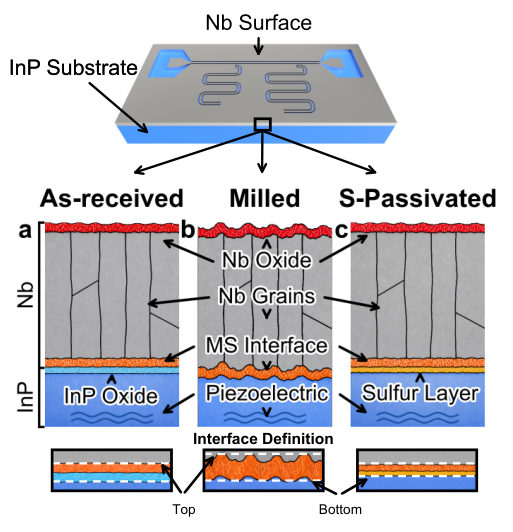
<figcaption class="paper-figure-caption"><b>Fig 1.</b> FIG. 1. Microwave loss channels in CPW resonators fab- ricated from sputtered Nb on epitaxy-ready InP. A three- dimensional rendering of the CPW chip is shown above three cross-sectional schematics of the experimental thin-film struc- tures described in panels (a)–(c). Nb grain boundaries, amor- phous MS interfaces, native oxides, and piezoelectric losses in the InP substrate are highlighted as possible microwave loss channels. (a) Sputtered Nb on InP, where the native InP sur- face oxide remains at the buried MS interface and contributes to an amorphous interfacial region. (b) Ar+-milled Nb on InP, where ion milling removes the native oxide but roughens the already amorphous MS interface....</figcaption>
</figure>
<figure class="paper-figure-card">
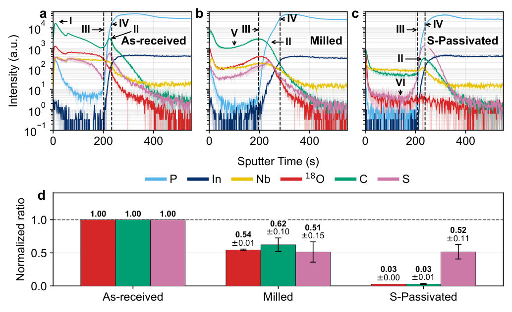
<figcaption class="paper-figure-caption"><b>Fig 2.</b> FIG. 2. ToF-SIMS depth profiles and normalized impurity incorporation metrics for Nb-on-InP (001) samples. Panels (a)–(c) show averaged depth profiles for the as-received, Ar-milled, and S-passivated samples, respectively. Data were acquired at four locations across each treatment condition and averaged, with ±1 standard deviation shown as the shaded region around each ion trace. The two vertical dashed lines in each depth-profile panel mark the bounds of the buried Nb–InP interface transition region, as defined using the piecewise-linear construction shown in Figure S1. The film-side and substrate-side bounds of the Nb–InP interface are indicated by markers III and IV, respectively, and...</figcaption>
</figure>
<figure class="paper-figure-card">
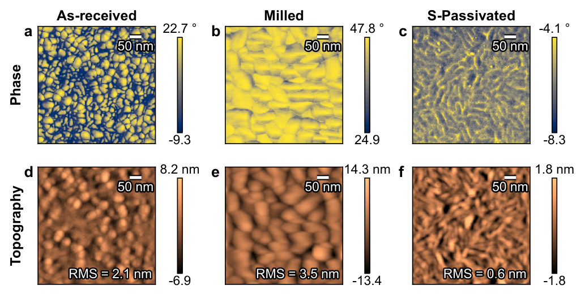
<figcaption class="paper-figure-caption"><b>Fig 3.</b> FIG. 3. Atomic force microscopy of Nb films deposited on InP (001) after different surface preparations. Panels (a)–(c) show top-surface phase images for the as-received, milled, and S-passivated samples, respectively, used for grain analysis. Panels (d)–(f) show the corresponding topography images for the as-received, milled, and S-passivated samples, respectively, with the RMS roughness values overlaid.</figcaption>
</figure>
<figure class="paper-figure-card">
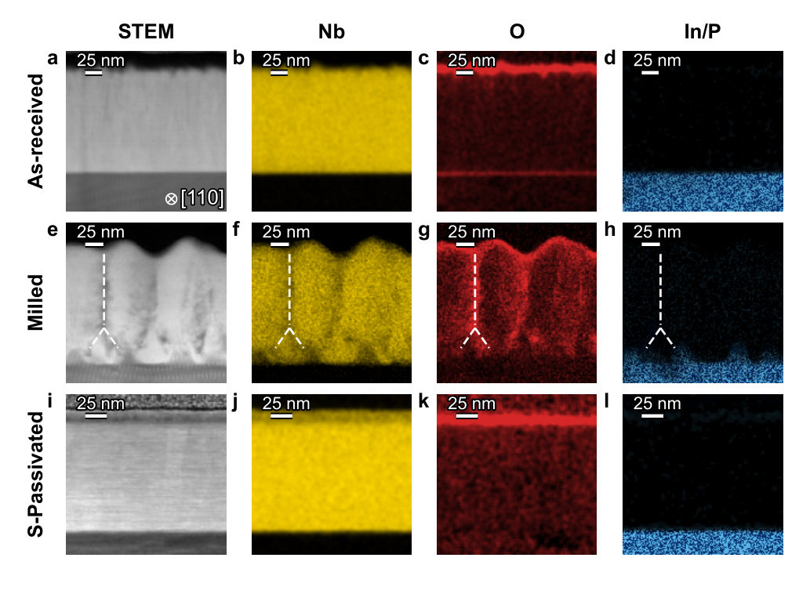
<figcaption class="paper-figure-caption"><b>Fig 4.</b> FIG. 4. Cross-sectional HAADF-STEM and EDS comparison of the buried Nb/InP (001) interface for the (a)–(d) as-received, (e)–(h) milled, and (i)–(l) S-passivated substrate treatments. (a), (e), and (i) present the HAADF-STEM images of the cross section for the as-received, milled, and S-passivated samples, respectively. EDS data for the Nb signal are presented in (b), (f), and (j), the O signal in (c), (g), and (k), and the combined In/P signal in (d), (h), and (l). All images are taken in the [110] cross-section direction. The milled interface exhibits pronounced roughening of the InP surface, forming pyramidal faceted structures at the buried interface. This roughened morphology propagates...</figcaption>
</figure>
<figure class="paper-figure-card">
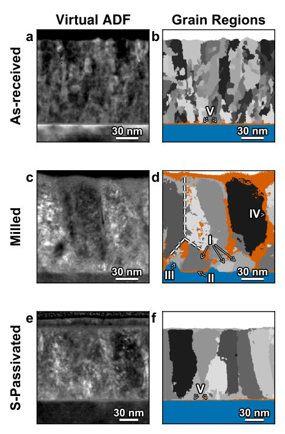
<figcaption class="paper-figure-caption"><b>Fig 5.</b> FIG. 5. Virtual annular dark-field (ADF) images recon- structed from the 4D-STEM datasets and cluster-based grain maps representing the projected Nb grain structure of the (a), (b) as-received, (c), (d) milled, and (e), (f) S-Passivated Nb/InP samples. Panels (a), (c), and (e) show the virtual ADF images reconstructed by integrating the corresponding 4D-STEM diffraction patterns over an annular detector range, while panels (b), (d), and (f) show the segmented structural maps. Grayscale regions correspond to different Nb grain regions, as defined from the associated diffraction patterns shown in the Supplementary Materials. See Figures S5-S7 cluster-mean diffraction patterns and Appendix D...</figcaption>
</figure>
</div>

<p><strong>Summary.</strong> This paper investigates how different substrate cleaning methods affect superconducting resonators made with Nb on InP. By comparing as-received, Ar+-milled, and S-passivated surfaces, the authors found that while S-passivation improved material quality, the resulting microwave losses were similar across all samples. This suggests that the primary limitation for device performance is likely due to substrate or packaging losses, rather than the buried metal-semiconductor interface itself.</p>
<p><strong>Why it may be interesting.</strong> The work directly addresses loss mechanisms in superconducting circuits, which is crucial for building quantum devices, by systematically ruling out the interface as the primary loss source.</p>
<details>
<summary>Detailed structure</summary>
<p><strong>Main problem.</strong> The study aims to understand and mitigate microwave loss in hybrid superconductor-semiconductor (S-Sm) systems, focusing specifically on the poorly understood buried metal-substrate (MS) interface.</p>
<p><strong>Main result.</strong> While S-passivation improved material quality (higher $T_c$, smoother interface) compared to Ar-milling, the measured internal quality factors ($Q_i$) were comparable across all preparations, suggesting the loss is not primarily due to the buried interface.</p>
<p><strong>Method.</strong> The researchers compared three substrate preparations (control, Ar+-milled, S-passivation) by measuring microwave resonance responses ($Q_i$) and characterizing the interfaces using ToF-SIMS, AFM, and STEM.</p>
<p><strong>Model / system.</strong> The physical system involves superconducting resonators fabricated using sputtered Niobium (Nb) films deposited on Indium Phosphide (InP) substrates, forming a critical S-Sm junction.</p>
<p><strong>Key observables.</strong> Internal quality factor ($Q_i$), normalized impurity ratios (O:In, C:In, S:In), interface width, and surface RMS roughness.</p>
<p><strong>Important parameters / regimes.</strong> The comparison is made at single photon powers, and the key parameters are the relative performance of the three surface treatments.</p>
<p><strong>Assumptions / limitations.</strong> The analysis assumes that the measured microwave loss is not dominated by the dielectric loss at the buried Nb–InP interface, pointing instead to substrate or package losses.</p>
<p><strong>Figures summary.</strong> Figures illustrate the three structural preparations, show ToF-SIMS depth profiles comparing impurity incorporation, and present AFM/STEM images detailing interface morphology and roughness.</p>
<p><strong>Paper structure.</strong> The paper follows a structure of problem identification (poorly understood interface loss) $
ightarrow$ experimental comparison of three preparation methods $
ightarrow$ detailed material characterization (chemical, structural) $
ightarrow$ measurement of microwave response ($Q_i$) $
ightarrow$ conclusion that loss is extrinsic to the interface.</p>
</details>
<details>
<summary>Abstract</summary>
<p>Substrate surface preparation is a key step in the fabrication of electronic devices. In III--V semiconductor platforms, e.g. used in HEMTs and lasers, removal of the native substrate oxide is extremely important, where improper removal will negatively affect end-of-line device performance. However, the impact of substrate preparation in hybrid superconductor--semiconductor (S--Sm) systems relevant to quantum information applications remains poorly understood. This study compares three surface preparations for the deposition of sputtered Nb films on InP: (i) no intentional oxide removal (control), (ii) \textit{in-situ} $\mathrm{Ar}^{+}$ milling, and (iii) S-passivation. \textit{In-situ} $\mathrm{Ar}^{+}$ milling reduces the O concentration at the metal--substrate (MS) interface, but also roughens the InP surface, increasing the effective thickness of the Nb--InP interface and promoting O incorporation through extended defects in the Nb film. S-passivation suppresses interfacial O more effectively while preserving a sharper and smoother buried interface. It also yields Nb films with higher superconducting transition temperatures and less structural damage than the $\mathrm{Ar}^{+}$-milled samples. Despite these materials improvements, the microwave response is comparable across the three preparations. At single photon powers, the highest internal quality factors, $Q_i$, are approximately $1.30\times10^{5}$ ($130\mathrm{k}$) for the control resonators, $9.7\times10^{4}$ ($97\mathrm{k}$) for the S-passivated resonators, and $8.4\times10^{4}$ ($84\mathrm{k}$) for the $\mathrm{Ar}^{+}$-milled resonators. These results suggest that the present devices are not primarily limited by dielectric loss at the buried Nb--InP interface.</p>
</details>
<p><sub><a href="#top">↑ back to top</a></sub></p>

<p><a id="paper-2609.14296"></a></p>
<h3 id="holographic-casimir-effect-for-mixed-boundary-conditions-and-non-cfts"><a href="http://arxiv.org/abs/2609.14296v1">Holographic Casimir Effect for Mixed Boundary Conditions and non-CFTs</a></h3>
<p><strong>Authors:</strong> Bing-Ji Ding, Hua-Chao Liu, Rong-Xin Miao<br>
<strong>Type:</strong> theory · <strong>Category:</strong> other · <strong>PDF:</strong> <a href="https://arxiv.org/pdf/2609.14296v1">https://arxiv.org/pdf/2609.14296v1</a><br>
<strong>Analysis basis:</strong> full PDF text, analyzed in chunks
<strong>Topic relevance:</strong> <code>Keldysh / 2PI / non-Gaussian methods</code> <strong>2/5</strong> · <code>methods for driven-dissipative</code> <strong>2/5</strong> · <code>analog quantum simulation</code> <strong>1/5</strong> · <code>correlated / nonlocal dissipation</code> <strong>1/5</strong> · <code>driven-dissipative phase transition</code> <strong>1/5</strong> · <code>non-equilibrium universality</code> <strong>1/5</strong> · <code>quantum measurements</code> <strong>1/5</strong></p>
<div class="figure-strip-hint">↔ Scroll figures horizontally</div>
<div class="paper-figures-scroll">
<figure class="paper-figure-card">
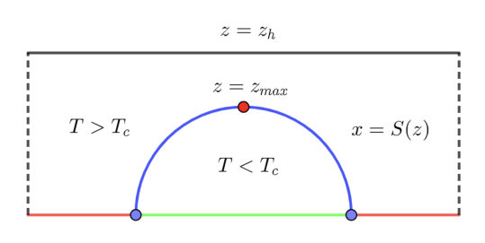
<figcaption class="paper-figure-caption"><b>Fig 1.</b> Figure 1: Gravity dual of a strip. The blue points represent the strip boundaries, while the blue curve indicates the EOW brane, i.e., x = S(z). Due to the periodic nature of the bulk spacetime, the two dashed lines are identified. The gravity dual corresponds to the region between the blue curve and the green line for the brane tension T &lt; Tc. Conversely, the complement of this region represents the gravity dual for the brane tension T &gt; Tc.</figcaption>
</figure>
<figure class="paper-figure-card">
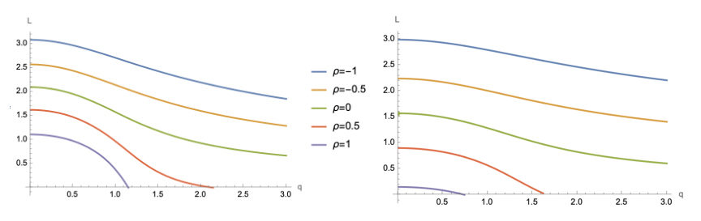
<figcaption class="paper-figure-caption"><b>Fig 2.</b> Figure 2: The strip width L decreases as the scalar parameter q increases. The left and right figures are for d = 3, 4, respectively. The condition L ≥0 may impose an upper limit on q for a fixed ρ.</figcaption>
</figure>
<figure class="paper-figure-card">
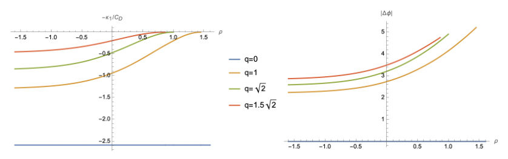
<figcaption class="paper-figure-caption"><b>Fig 3.</b> Figure 3: Casimir ratio −κ1/CD (Left) and scalar difference |∆ϕ| (Right) for 2D strip. demonstrates that the scalar difference |∆ϕ| increases as the parameter q increases. The blue, orange, green and red curves correspond to q = 0, 1, √</figcaption>
</figure>
<figure class="paper-figure-card">
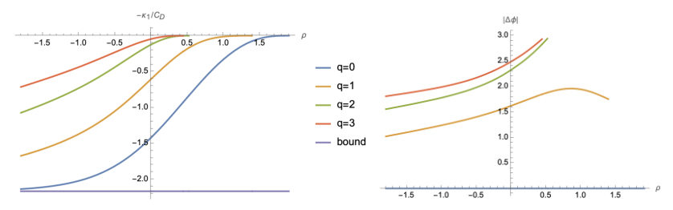
<figcaption class="paper-figure-caption"><b>Fig 4.</b> Figure 4: Casimir ratio −κ1/CD (Left) and scalar difference |∆ϕ| (Right) for 3D strip. The right figure demonstrates that the scalar difference |∆ϕ| increases as the parameter q increases. The blue, orange, green and red curves correspond to q = 0, 1, 2, 3, respectively. Conversely, the left figure indicates that the ratio −κ1/CD increases with increasing q and thus the scalar difference |∆ϕ|. Overall, these two figures suggest that the brane-localized scalar diminishes the Casimir effect and adheres to the holographic lower bound (1.1), represented by the purple line of the left figure.</figcaption>
</figure>
<figure class="paper-figure-card">
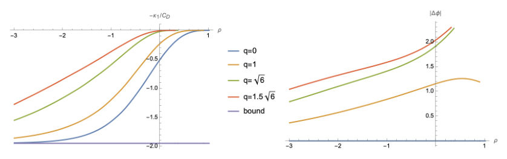
<figcaption class="paper-figure-caption"><b>Fig 5.</b> Figure 5: Casimir ratio −κ1/CD (Left) and scalar difference |∆ϕ| (Right) for 4D strip. The right figure demonstrates that the scalar difference |∆ϕ| increases as the parameter q increases. The blue, orange, green and red curves correspond to q = 0, 1, √</figcaption>
</figure>
</div>

<p><strong>Summary.</strong> This theoretical paper explores the holographic Casimir effect in complex quantum field theories (non-CFTs) using the AdS/BCFT correspondence. It demonstrates that mixed boundary conditions can generate repulsive Casimir forces, and crucially, that a brane-localized scalar field can stabilize this repulsive force, ensuring consistency with the cosmic censorship conjecture. The work provides insights into how boundary matter fields modify fundamental vacuum energy predictions.</p>
<p><strong>Why it may be interesting.</strong> While the core topic is gravity/QFT, the study of boundary effects, symmetry breaking (non-CFTs), and the emergence of repulsive forces via boundary conditions touches upon concepts relevant to engineered quantum systems and boundary physics in AMO/QO.</p>
<details>
<summary>Detailed structure</summary>
<p><strong>Main problem.</strong> The paper investigates the holographic Casimir effect in systems characterized by mixed boundary conditions and non-Conformal Field Theories (non-CFTs). It aims to understand how boundary deformations affect the Casimir energy.</p>
<p><strong>Main result.</strong> The study shows that imposing mixed boundary conditions can lead to a repulsive Casimir force, and the inclusion of a brane-localized scalar field can maintain consistency with the cosmic censorship conjecture where simpler models fail.</p>
<p><strong>Method.</strong> The authors employ holographic renormalization techniques within the AdS/BCFT framework, utilizing the holographic g-theorem and analyzing the behavior of the Casimir amplitude ($\kappa_1$).</p>
<p><strong>Model / system.</strong> The physical system is an AdS/BCFT setup involving a strip geometry and a massive, brane-localized scalar field. The analysis is performed in both 2D and higher dimensions ($d \ge 3$).</p>
<p><strong>Key observables.</strong> Casimir amplitude ($\kappa_1$), Casimir force (attractive vs. repulsive), and the holographic bound ratio $-\kappa_1/C_D$.</p>
<p><strong>Important parameters / regimes.</strong> Scalar field mass squared ($m^2$), brane tension ($T$), and the boundary scalar source ($\sigma$).</p>
<p><strong>Assumptions / limitations.</strong> The analysis relies on the AdS/BCFT correspondence and assumes the validity of the holographic g-theorem in certain limits, though its generalization to non-CFTs is questioned.</p>
<p><strong>Figures summary.</strong> Figures illustrate the gravity dual of a strip geometry, showing the EOW brane's connection status (disconnected vs. connected) depending on the presence of the scalar field, which is crucial for satisfying cosmic censorship.</p>
<p><strong>Paper structure.</strong> The paper progresses by first establishing the holographic framework and the role of the g-theorem in 2D. It then extends the analysis to higher dimensions, focusing on how the scalar field modifies the Casimir amplitude, culminating in the discussion of repulsive forces and cosmic censorship.</p>
</details>
<details>
<summary>Abstract</summary>
<p>This paper investigates the holographic Casimir effect in AdS/BCFT with a brane-localized scalar field. The scalar field takes different values at the strip's two boundaries, leading to mixed boundary conditions. The massive brane-localized scalar field typically breaks the boundary conformal symmetries, allowing us to study the holographic Casimir effect in non-CFTs. In two-dimensional spacetime, we apply the holographic g-theorem to prove the holographic bound on the Casimir effect for general brane-localized matter fields. In higher dimensions, we find that the brane-localized scalar field reduces the Casimir amplitude when the mass squared \(m^2=0\), but can increase it when \(m^2 < 0\). Additionally, there is a no-hair theorem for the cases where \(m^2>0\). These findings indicate that relevant boundary deformations can enhance the Casimir effect. As a byproduct, we obtain a gravitational dual of the repulsive Casimir force under mixed boundary conditions and argue that it aligns with the cosmic censorship conjecture.</p>
</details>
<p><sub><a href="#top">↑ back to top</a></sub></p>

<p><a id="paper-2609.14319"></a></p>
<h3 id="spectral-density-of-angular-momentum-transfer-from-a-swift-electron-to-a-large-spherical-nanoparticle"><a href="http://arxiv.org/abs/2609.14319v1">Spectral density of angular momentum transfer from a swift electron to a large spherical nanoparticle</a></h3>
<p><strong>Authors:</strong> Jorge Luis Briseño-Gómez, Alejandro Reyes-Coronado<br>
<strong>Type:</strong> theory · <strong>Category:</strong> other · <strong>PDF:</strong> <a href="https://arxiv.org/pdf/2609.14319v1">https://arxiv.org/pdf/2609.14319v1</a><br>
<strong>Analysis basis:</strong> full PDF text, analyzed in chunks
<strong>Topic relevance:</strong> <code>Keldysh / 2PI / non-Gaussian methods</code> <strong>2/5</strong> · <code>interference shaping light</code> <strong>2/5</strong> · <code>methods for driven-dissipative</code> <strong>2/5</strong> · <code>correlated / nonlocal dissipation</code> <strong>1/5</strong> · <code>quantum measurements</code> <strong>1/5</strong></p>
<div class="figure-strip-hint">↔ Scroll figures horizontally</div>
<div class="paper-figures-scroll">
<figure class="paper-figure-card">
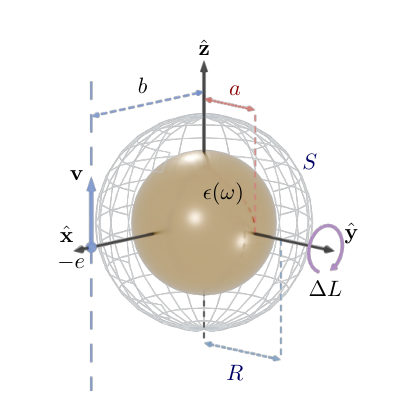
<figcaption class="paper-figure-caption"><b>Fig 1.</b> FIG. 1. Schematics of the system under study. A spheri- cal nanoparticle of radius a, characterized by a frequency- dependent dielectric function ϵ(ω), is embedded in vacuum and centered at the origin. A swift electron (blue dot) trav- els with constant velocity v = v ˆz at an impact parameter b relative to the NP center. The angular-momentum trans- fer is obtained from a closed-surface integral of the Maxwell stress tensor over the integration surface S (grey), a sphere of radius R satisfying a &lt; R &lt; b, so that it fully encloses the nanoparticle without intersecting the electron trajectory; one wedge of S facing the reader has been omitted purely for visual clarity.</figcaption>
</figure>
<figure class="paper-figure-card">
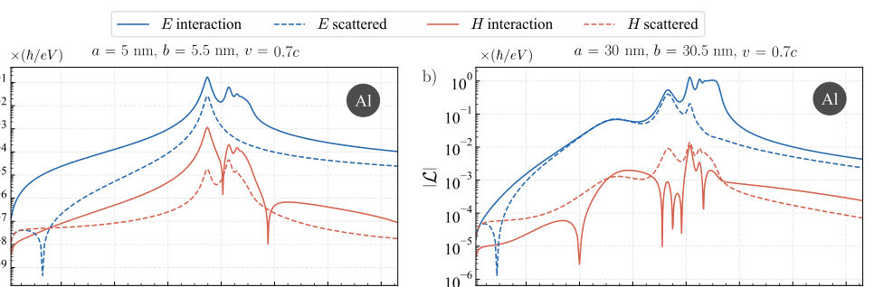
<figcaption class="paper-figure-caption"><b>Fig 2.</b> FIG. 2. Frequency-resolved spectral density |L| in Log scale, decomposed into its electric (blue) and magnetic (red) contri- butions, each split into the interaction (solid) and scattered-scattered (dashed) terms of the Maxwell stress tensor [Eq. (2)]; the external-external term vanishes identically. a) Aluminum, a = 5 nm, b = 5.50 nm, v = 0.7c. b) Aluminum, a = 30 nm, b = 30.50 nm, v = 0.7c.</figcaption>
</figure>
<figure class="paper-figure-card">
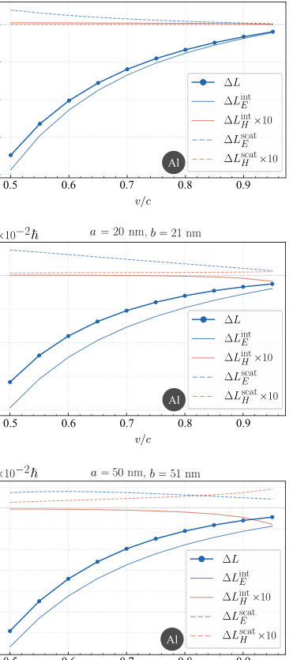
<figcaption class="paper-figure-caption"><b>Fig 3.</b> FIG. 3. Total angular momentum transfer ∆L (thick line with markers), and its electric interaction (∆Lint E , thin solid blue), electric scattered-scattered (∆Lscat E , dashed blue), mag- netic interaction (∆Lint H , thin solid red, ×10), and magnetic scattered-scattered (∆Lscat H , dashed red, ×10) contributions, transferred by a swift electron to an aluminum NP as a func- tion of v, at fixed b = a + 1 nm: a) a = 5 nm, b = 6 nm; b) a = 20 nm, b = 21 nm; c) a = 50 nm, b = 51 nm.</figcaption>
</figure>
<figure class="paper-figure-card">
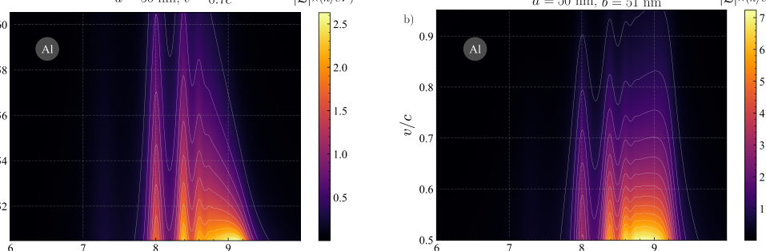
<figcaption class="paper-figure-caption"><b>Fig 4.</b> FIG. 4. Frequency- and parameter-resolved maps of |L| at a = 50 nm. a) Aluminum, as a function of ℏω and impact parameter b at fixed v = 0.7c. b) Aluminum, as a function of ℏω and electron velocity v at fixed b = 51 nm.</figcaption>
</figure>
<figure class="paper-figure-card">
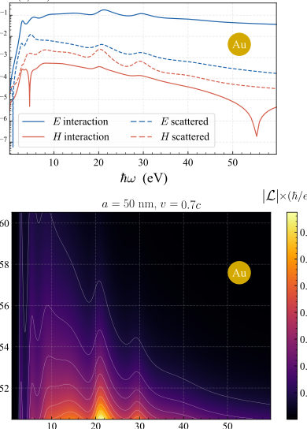
<figcaption class="paper-figure-caption"><b>Fig 5.</b> FIG. 5. a) Frequency-resolved angular momentum transfer to a gold nanoparticle of radius a = 30 nm, at fixed v = 0.7c. Spectral density |L(ω)| in Log scale at b = 30 nm, decomposed into its electric interaction (E interaction, solid blue), electric scattered-scattered (E scattered, dashed blue), magnetic interaction (H interaction, solid red), and magnetic scattered-scattered (H scattered, dashed red) contributions. b) Frequency- and impact-parameter-resolved map of |L| for a = 50 nm, at fixed v = 0.7c, over 50.5 nm ≤b ≤60.5 nm.</figcaption>
</figure>
</div>

<p><strong>Summary.</strong> This work develops a highly efficient, fully retarded electrodynamical method to calculate the spectral density of angular momentum transferred from a swift electron to a large spherical nanoparticle. By optimizing the multipole summation, the authors can analyze nanoparticles up to 50 nm, revealing that the transfer is governed by field interference and showing material-dependent enhancements in angular momentum transfer, particularly for gold.</p>
<p><strong>Why it may be interesting.</strong> While focused on electron-matter interaction rather than quantum information, the rigorous development of a highly efficient, scalable electrodynamical calculation method (reducing complexity from $O(\ell^4)$ to $O(\ell^3)$) is a significant computational achievement applicable to complex open quantum system modeling.</p>
<details>
<summary>Detailed structure</summary>
<p><strong>Main problem.</strong> The paper determines the spectral density of angular momentum transfer ($\Delta L$) from a swift electron to a large spherical nanoparticle.</p>
<p><strong>Main result.</strong> The method successfully calculates the full spectral density, showing the transfer is dominated by interference between the electron and scattered fields, and quantifies the enhanced angular momentum transfer in gold compared to aluminum as electron velocity increases.</p>
<p><strong>Method.</strong> It employs a fully retarded, causal, multipole-converged electrodynamical methodology based on the closed-surface Maxwell stress tensor formulation.</p>
<p><strong>Model / system.</strong> The system involves a spherical nanoparticle (radius $a$) characterized by a dielectric function $\epsilon(\omega)$, interacting with a swift electron traveling at velocity $v$ at an impact parameter $b$.</p>
<p><strong>Key observables.</strong> Spectral density of angular momentum transfer, $L_n(\omega)$, and the ratio of electric to magnetic contributions.</p>
<p><strong>Important parameters / regimes.</strong> Nanoparticle size ($a$ up to 50 nm), electron velocity ($v$), and impact parameter ($b$).</p>
<p><strong>Assumptions / limitations.</strong> The analysis is restricted to an isolated, local, spherical electrodynamic description, and the calculation relies on the closed-surface Maxwell stress tensor formulation.</p>
<p><strong>Figures summary.</strong> Figure 1 schematically shows the setup: a spherical NP interacting with a swift electron via a closed-surface integral $S$. Figure 2 likely shows the frequency-resolved spectral density $|L|$.</p>
<p><strong>Paper structure.</strong> The paper develops the electrodynamical theory using multipole expansions, derives the angular integrals in terms of irreducible integrals, and applies this optimized method to calculate the spectral density for various materials and parameters.</p>
</details>
<details>
<summary>Abstract</summary>
<p>Swift electrons in scanning transmission electron microscopy transfer both linear and angular momentum to nanoparticles, underlying electron-beam-driven nanoscale manipulation ("electron tweezers"). Prior theory relied either on the small-particle (dipolar) approximation, valid only well below experimentally relevant sizes, or on frequency-integrated multipolar calculations that leave the spectral structure of the interaction unresolved. Here we present a fully retarded, causal, multipole-converged electrodynamical methodology for the angular momentum transfer from a swift electron to an isolated spherical nanoparticle, based on a closed-surface Maxwell stress tensor formulation whose angular integrals reduce analytically to a small, material- and trajectory-independent set of irreducible integrals over associated Legendre functions. This lowers the cost of the double multipolar sum from O(l_max^4) to O(l_max^3), enabling convergence up to l_max=51 for nanoparticles as large as a=50 nm, nearly four times the order of the largest previous calculation at this size and previously unreached for an optically complex material, at three to four orders of magnitude lower cost. Applied to aluminum and gold nanoparticles up to a=50 nm, the method resolves the transfer's spectral density across the full frequency domain, showing it is set by interference between the electron and scattered fields, dominating at essentially every frequency; the electric contribution exceeds the magnetic one by two to three orders of magnitude, though spectral resolution reveals sign changes in the magnetic term hidden in the frequency-integrated transfer. At a=50 nm, gold transfers substantially more angular momentum than aluminum despite its more intricate response, by a factor growing with velocity from about 2x at v=0.5c to more than 6x as v-&gt;c (fixed b=51 nm from the nanoparticle center).</p>
</details>
<p><sub><a href="#top">↑ back to top</a></sub></p>

<p><a id="paper-2609.15661"></a></p>
<h3 id="extracting-dipole-orientations-from-asymmetric-plasmonic-nanostructures-towards-machine-learning-assisted-spectropolarimetry"><a href="http://arxiv.org/abs/2609.15661v1">Extracting dipole orientations from asymmetric plasmonic nanostructures towards machine-learning-assisted spectropolarimetry</a></h3>
<p><strong>Authors:</strong> P. Christian Simo, Michaela Zbytovska, Annika Mildner, Lukas Lang, Melanie Sommer, Dieter P. Kern, Monika Fleischer<br>
<strong>Type:</strong> both · <strong>Category:</strong> other · <strong>PDF:</strong> <a href="https://arxiv.org/pdf/2609.15661v1">https://arxiv.org/pdf/2609.15661v1</a><br>
<strong>Analysis basis:</strong> full PDF text, analyzed in chunks
<strong>Topic relevance:</strong> <code>quantum measurements</code> <strong>2/5</strong> · <code>quantum optics experiment</code> <strong>2/5</strong> · <code>analog quantum simulation</code> <strong>1/5</strong> · <code>interference shaping light</code> <strong>1/5</strong> · <code>methods for driven-dissipative</code> <strong>1/5</strong></p>
<div class="figure-strip-hint">↔ Scroll figures horizontally</div>
<div class="paper-figures-scroll">
<figure class="paper-figure-card">
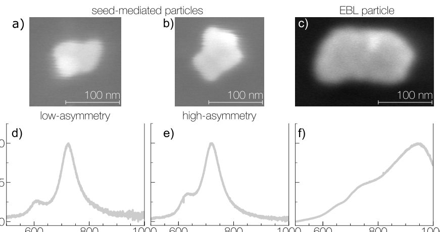
<figcaption class="paper-figure-caption"><b>Fig 1.</b> Figure 1: (a-c) SEM images of the asymmetric gold nanoparticles studied in this work: (a) low- asymmetry colloidal particle; (b) high-asymmetry colloidal particle, (c) electron beam lithography (EBL)- fabricated particle; (d-f) the respective unpolarized dark-field spectra that exhibit (d,e) two or (f) three localized surface plasmon (LSP) resonances.</figcaption>
</figure>
<figure class="paper-figure-card">
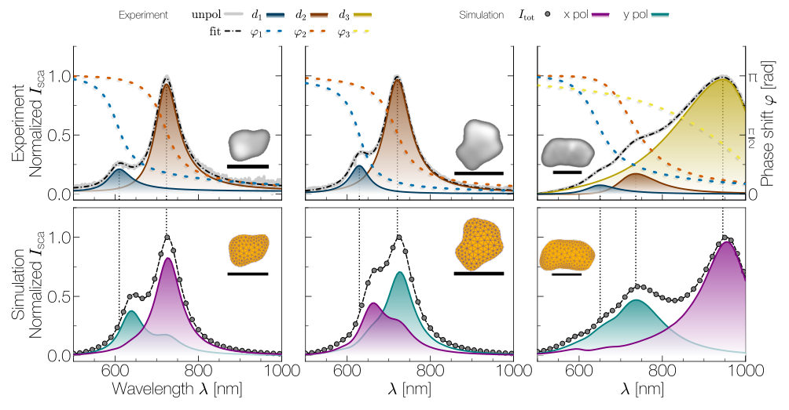
<figcaption class="paper-figure-caption"><b>Fig 2.</b> Figure 2: (top) Normalized spectra for the corresponding particles under unpolarized excitation, with the fitted Lorentzian magnitudes and phase shifts. The respective particles are presented as inlays (scale bars: 100 nm). (bottom) The simulated spectra under x- and y-polarization of the resulting 3D models. The total intensity is the sum of the simulated spectra, which is used to normalize the data. The top-down views of the extruded and meshed models are also presented. The dotted vertical lines indicate the LSP modes from the experiment.</figcaption>
</figure>
<figure class="paper-figure-card">
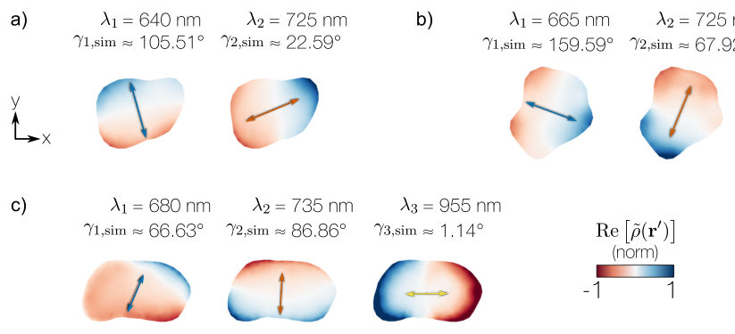
<figcaption class="paper-figure-caption"><b>Fig 3.</b> Figure 3: Top view of the surface charge density ρ (r′) distributions of the three systems at resonance wavelengths λk taken from the respective simulated spectra shown in Figure 2 (d, e, f). While the (a, b) colloidal particles present two dipolar modes, the (c) EBL-fabricated nanostructure shows three modes, from which the first one at λ1 = 680 nm is a mixed quadrupolar-dipolar distribution (see Supporting Information Figure S3). Their dipole moments are displayed as arrows with their orientation denoted by γk,sim.</figcaption>
</figure>
<figure class="paper-figure-card">
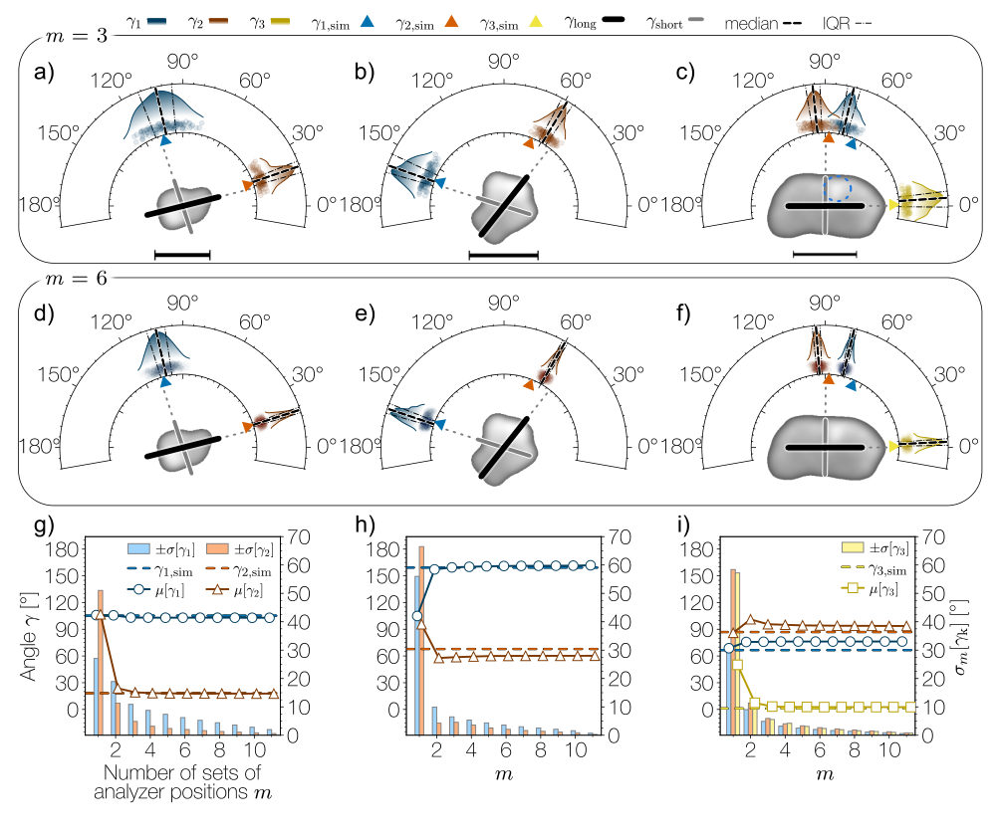
<figcaption class="paper-figure-caption"><b>Fig 4.</b> Figure 4: The three asymmetric plasmonic particles as presented in Figure 2 and the statistics of the evaluated dipole moment orientations γk extracted from all the possible filtered combinations ˜C in the set of m = 3 or 6 analyzer angles. The low-asymmetry particle (a, d) and the high-asymmetry particle (b, e) express two distinct dipole moment orientations, while the larger EBL particle (c, f) displays three, which mostly show good overlap with the angles of the simulated dipole moment orientations γk,sim (internal rim triangles) and the long and short highest symmetry axes at angles γlong (black bar) and γshort (gray bar), respectively. The EBL particle’s vertical protrusion is marked...</figcaption>
</figure>
<figure class="paper-figure-card">
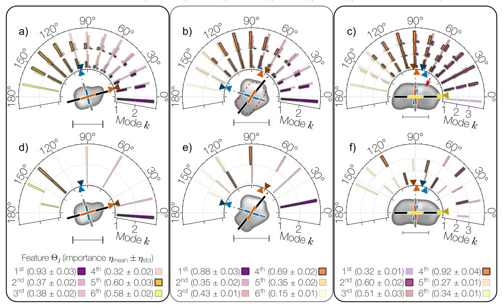
<figcaption class="paper-figure-caption"><b>Fig 5.</b> Figure 5: The number of occurrences of each analyzer angle within the permutations (histogram bars) (a, b, c) for all the filtered analyzer angle permutations ˜C within the set m = 6. (d, e, f) The analyzer angle permutation which delivers the dipole orientation closest to the angle γk,best (inner triangles). The results are presented column-wise for each shown plasmonic system (scale bars 100 nm). The simulated dipole orientations γk,sim (outer triangles) and the SEM-extracted geometrical axes γlong (black bar) and γshort (gray bar) are also depicted. With the set number m = 6, the six analyzer angles are evaluated concerning their frequency of appearance within the discretized 15° steps....</figcaption>
</figure>
</div>

<p><strong>Summary.</strong> This work presents a sophisticated method combining polarimetric dark-field spectroscopy and machine learning to determine the dipole orientations of asymmetric plasmonic nanoparticles. By simultaneously fitting spectral data from multiple polarizer angles, the authors achieve highly accurate orientation measurements. This technique significantly improves the characterization of nanostructure optical properties, linking fundamental physics measurements to advanced computational tools.</p>
<p><strong>Why it may be interesting.</strong> While focused on plasmonics, the rigorous combination of advanced optical characterization (spectro-polarimetry) with machine learning for parameter extraction mirrors techniques used in characterizing complex quantum optical systems or analyzing quantum state tomography data.</p>
<details>
<summary>Detailed structure</summary>
<p><strong>Main problem.</strong> The paper aims to accurately extract the azimuthal dipole orientations of plasmonic nanostructures from their measured spectral responses.</p>
<p><strong>Main result.</strong> The developed machine-learning assisted spectro-polarimetric method successfully extracts dipole orientations that align well with both computational simulations and direct electron microscope measurements.</p>
<p><strong>Method.</strong> The technique involves polarimetric dark-field spectroscopy, fitting spectra collected at multiple analyzer angles using an analytical dipole model, and employing machine learning (HGBR) for statistical refinement.</p>
<p><strong>Model / system.</strong> The study analyzes asymmetric plasmonic nanoparticles (colloidal and EBL-fabricated) whose localized surface plasmon (LSP) resonances are probed. The analysis is grounded in the Analytical Dipole Model (ADM) and supplemented by multipole decomposition of surface charge densities.</p>
<p><strong>Key observables.</strong> Dipole moment orientations ($\gamma_k$), electric far-field dipole intensities, and multipole weights ($ ilde{q}_{\ell m}$).</p>
<p><strong>Important parameters / regimes.</strong> Analyzer angle ($\Theta$), spectral resonance wavelengths ($\lambda_k$), and the number of simultaneously fitted analyzer angles ($m$).</p>
<p><strong>Assumptions / limitations.</strong> The method assumes the spectral features can be modeled by the ADM, and that the relative alignment between polarization filters and the sample can be precisely tracked using diffraction patterns.</p>
<p><strong>Figures summary.</strong> Figures show SEM images of asymmetric nanoparticles, their dark-field spectra revealing LSP resonances, and simulated surface charge density distributions analyzed via multipole decomposition.</p>
<p><strong>Paper structure.</strong> The paper details the experimental setup using polarimetric dark-field spectroscopy, describes the systematic data collection by varying analyzer angles, presents the fitting procedure using the ADM, and validates the results by comparing extracted orientations against simulation and applying ML regression.</p>
</details>
<details>
<summary>Abstract</summary>
<p>In this work, nanoparticles with various asymmetries are analyzed for their azimuthal orientations using polarimetric dark-field spectroscopy at different analyzing angles of a linear polarizer. This approach reveals their spectral behavior in terms of electric far-field dipole intensities when modeled with an analytical dipole model. By simultaneously fitting the spectra from a set of analyzer angles, the respective dipole orientations are extracted. In a statistical approach, all non-repeating permutations are further studied with a machine learning algorithm. The resulting azimuthal distribution of dipole orientations coincides well with the geometric orientations derived from simulations and electron microscope images. A histogram gradient boosting regressor evaluates the impact of the measurement setup on the simultaneously fitted sets, linking the weights of the analyzer angles to the asymmetry in the plasmonic systems. This comprehensive spectroscopic method improves the accuracy of dipole orientation measurements and enables modern machine learning models to interpret potentially complex features of nanostructures.</p>
</details>
<p><sub><a href="#top">↑ back to top</a></sub></p>

<p><a id="paper-2609.15474"></a></p>
<h3 id="two-strategies-to-measure-spin-orbit-torque-efficiency-acting-on-the-insulating-magnet-limath2007mathalmath2008mathfemath2009mathomath2010math"><a href="http://arxiv.org/abs/2609.15474v1">Two Strategies to Measure Spin-Orbit-Torque Efficiency Acting on the Insulating Magnet Li$_{0.5}$Al$_{0.7}$Fe$_{1.8}$O$_4$</a></h3>
<p><strong>Authors:</strong> Orion Smedley, Thow Min Jerald Cham, Daisy O'Mahoney, Sanyum Channa, Xin Yu Zheng, Anna Janni, Lauren J. Riddiford, Yuhan Liang, Bozo Vareskic, Zbigniew Galazka, Yunqiu Kelly Luo, Yuri Suzuki, Daniel C. Ralph<br>
<strong>Type:</strong> experiment · <strong>Category:</strong> other · <strong>PDF:</strong> <a href="https://arxiv.org/pdf/2609.15474v1">https://arxiv.org/pdf/2609.15474v1</a><br>
<strong>Analysis basis:</strong> full PDF text, analyzed in chunks
<strong>Topic relevance:</strong> <code>quantum measurements</code> <strong>2/5</strong> · <code>quantum optics experiment</code> <strong>2/5</strong> · <code>analog quantum simulation</code> <strong>1/5</strong> · <code>driven-dissipative phase transition</code> <strong>1/5</strong> · <code>interference shaping light</code> <strong>1/5</strong></p>
<div class="figure-strip-hint">↔ Scroll figures horizontally</div>
<div class="paper-figures-scroll">
<figure class="paper-figure-card">
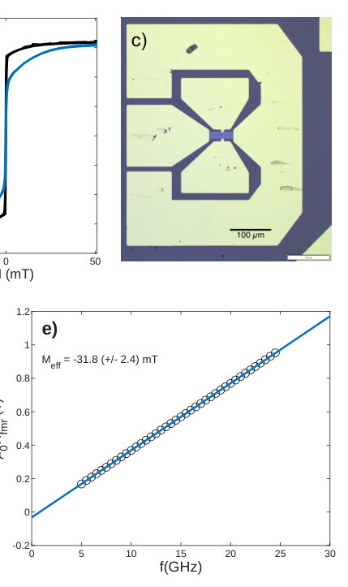
<figcaption class="paper-figure-caption"><b>Fig 1.</b> Figure 1: Structural and magnetic characterization of the LAFO thin films. a) X-ray diffraction of 11.3 nm LAFO on (001) oriented MGO around the (004) film peak. b) Static magnetic mea- surements at room temperature via SQUID magnetometry of magnetization (M) versus applied magnetic field (H) on a 11.3 nm thick LAFO sample along the in-plane [110] and out-of-plane [001] directions. c) Geometry of the contact pads used for the lateral + longitudinal ST-FMR. Scale bar is 100 µm. d) FMR frequency dependence of the full-width-half-maximum linewidth (µ0HFWHM). e) FMR resonance field (µ0HFMR) as a function of frequency. In panels d) and e) the magnetic field is oriented along the [001] direction.</figcaption>
</figure>
<figure class="paper-figure-card">
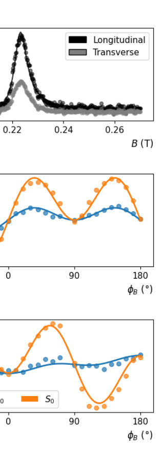
<figcaption class="paper-figure-caption"><b>Fig 2.</b> Figure 2: Measurement of the damping-like spin–orbit torque using spin-torque ferromagnetic res- onance (ST-FMR) for a Li0.5Al0.7Fe1.8O4 (14.4 nm)/Pt (2 nm) sample at room temperature. (a) Representative field sweeps at ϕ = 50◦with Lorentzian fits to the longitudinal and transverse (Hall) DC mixing voltages. The extracted symmetric (orange) and antisymmetric (blue) components are plotted as a function of ϕ for the (b) longitudinal and (c) transverse signals. The angular depen- dence (Eq. (1)) is fitted to obtain the coefficients listed in Table 1, which are used to quantify the spin–orbit torque amplitudes.</figcaption>
</figure>
<figure class="paper-figure-card">
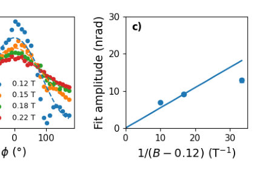
<figcaption class="paper-figure-caption"><b>Fig 3.</b> Figure 3: Attempt to measure damping-like spin-orbit torque using Sagnac interferometry for a Li0.5Al0.7Fe1.8O4 (14.4 nm)/Pt (2 nm) sample at room temperature. (a) Calibration of the magneto- optic coupling constant κ. The Kerr signal is measured versus out-of-plane field for the sample and an aluminum mirror background reference. (b) Measurements of current-induced Kerr rotation as a function of the applied in-plane magnetic-field angle. (c) Amplitude of the oscillations in ∆θk versus ϕ for different magnitudes of magnetic field B, with a linear fit to 1/(B + µ0Meff) using the previously-determined value µ0Meff = −0.12(2) T. Here, we use a time constant τ = 1 s, acquisition interval 1 s,...</figcaption>
</figure>
<figure class="paper-figure-card">
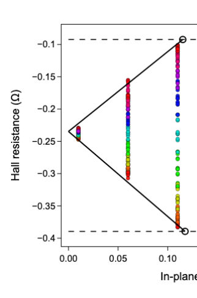
<figcaption class="paper-figure-caption"><b>Fig 4.</b> Figure 5: Planar Hall measurement of µ0Meff. An applied in-plane magnetic field rotates the magnetization toward the film plane. Because the planar Hall resistance is much larger than the anomalous Hall resistance (RPHE ≫RAHE), the measured Hall resistance depends strongly on the in-plane field direction. We take the saturation field as our measurement of µ0Meff</figcaption>
</figure>
<figure class="paper-figure-card">
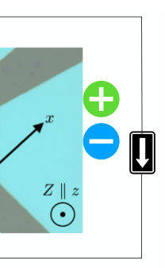
<figcaption class="paper-figure-caption"><b>Fig 5.</b> Figure 6: ST-FMR polarity conventions. Pictured is a top-down view of an ST-FMR bilayer device with magnet on top of the spin source, reproduced from reference [13]. Given an applied current polarity (arrow), the colored pairs of + and −signs indicate different conventions for measuring voltages.</figcaption>
</figure>
</div>

<p><strong>Summary.</strong> This work tackles the difficult measurement of spin-orbit-torque efficiency in insulating magnets using two advanced techniques: ST-FMR and Sagnac interferometry. ST-FMR yields a quantifiable efficiency value, while the optical method suggests a much weaker torque. The discrepancy prompts speculation about overlooked magnetic contributions, particularly out-of-plane spin components, crucial for understanding insulating spintronics.</p>
<p><strong>Why it may be interesting.</strong> While the core physics is condensed matter magnetism, the comparison between electrical (ST-FMR) and optical (Sagnac) measurement techniques for quantifying fundamental coupling constants (like SOT efficiency) is highly relevant to experimental quantum sensing and characterization of magnetic states.</p>
<details>
<summary>Detailed structure</summary>
<p><strong>Main problem.</strong> The primary challenge is developing sensitive and reliable methods to measure the spin-orbit-torque (SOT) efficiency in insulating magnetic materials.</p>
<p><strong>Main result.</strong> The authors report a spin-torque efficiency of $\xi_{\text{ST-FMR}} \sim 0.07$ using ST-FMR, which is comparable to metallic ferromagnets, while an optical measurement yielded a significantly weaker result, suggesting unaccounted physics in the optical setup.</p>
<p><strong>Method.</strong> Two complementary experimental strategies were employed: (1) Lateral + longitudinal Spin-Torque Ferromagnetic Resonance (ST-FMR) to extract torque coefficients, and (2) Sagnac interferometry to measure optically induced magnetic deflection.</p>
<p><strong>Model / system.</strong> The study focuses on thin films of the insulating magnet lithium aluminum ferrite ($    ext{Li}<em 0.7>{0.5}   ext{Al}</em>_4$, LAFO) coated with a Pt layer. The analysis models magnetization dynamics under the influence of spin-orbit torque.}   ext{Fe}_{1.8}   ext{O</p>
<p><strong>Key observables.</strong> Spin-torque efficiency ($\xi$), DC voltages ($  ext{V}<em XY>{XX},    ext{V}</em>$) from ST-FMR, and magnetic deflection angle ($\theta_k$) from Sagnac interferometry.</p>
<p><strong>Important parameters / regimes.</strong> LAFO thickness ($14.4 \text{ nm}$), applied current density ($5.1(5) \times 10^{10} \text{ A m}^{-2}$), and the derived spin-torque efficiency values.</p>
<p><strong>Assumptions / limitations.</strong> The ST-FMR analysis assumes the separation of spin-torque signals from artifacts like spin-pumping and resonant heating. The optical analysis speculates that the discrepancy might arise from an out-of-plane spin component not captured by the standard model.</p>
<p><strong>Figures summary.</strong> Figures illustrate $   ext{XRD}$ and $ ext{SQUID}$ magnetometry of LAFO, the contact geometry, and $   ext{FMR}$ linewidth/resonance field measurements used for characterization.</p>
<p><strong>Paper structure.</strong> The paper first establishes the difficulty of measuring SOT in insulators. It then details the ST-FMR approach, deriving torque coefficients from measured voltages, and presents the resulting efficiency. Subsequently, it analyzes the Sagnac interferometry results, comparing them to the ST-FMR findings and discussing the physical implications of the discrepancy.</p>
</details>
<details>
<summary>Abstract</summary>
<p>For insulating magnets, widely-used electrically-based techniques to measure spin-orbit-torque efficiency can suffer from poor signal-to-noise ratios and unwanted artifacts, while optical measurements based on conventional magneto-optical Kerr effect (MOKE) imaging often lack sufficient sensitivity. Here we analyze two strategies for measuring the spin-torque efficiency acting on an insulating magnet, focusing on the torque from Pt acting on thin films of the low-damping magnet lithium aluminum ferrite (LAFO). First, lateral + longitudinal spin-torque ferromagnetic resonance (ST-FMR) allows separation of the spin-torque signal from artifacts due to spin-pumping and resonant heating. With this technique, we measure a spin-torque efficiency $ξ^\text{ST-FMR}_\text{DL}\sim\ 0.07$, comparable to but a bit less than for Pt acting on metallic ferromagnets. Second, we attempted optical measurements of spin-orbit-torque-induced magnetic deflection using Sagnac interferometry. We find that Sagnac interferometry provides sufficient sensitivity to measure signals from 14.4 nm LAFO thin films, but the inferred torque efficiency is much weaker than the result from lateral + longitudinal ST-FMR. We speculate that there may be another contribution to the Sagnac signal other than current-induced magnetic deflection, perhaps an out-of-plane component of itinerant electron spins. This becomes relevant for insulating magnets in which the magneto-optic coupling coefficient is very weak.</p>
</details>
<p><sub><a href="#top">↑ back to top</a></sub></p>

<p><a id="paper-2609.15231"></a></p>
<h3 id="quasilocal-transport-in-the-integer-quantised-hall-effect-adiabatic-separation-local-ohms-law-and-joule-heating-of-the-incompressible-strips"><a href="http://arxiv.org/abs/2609.15231v1">Quasilocal transport in the integer quantised Hall effect: adiabatic separation, local Ohm's law, and Joule heating of the incompressible strips</a></h3>
<p><strong>Authors:</strong> A. Siddiki<br>
<strong>Type:</strong> theory · <strong>Category:</strong> other · <strong>PDF:</strong> <a href="https://arxiv.org/pdf/2609.15231v1">https://arxiv.org/pdf/2609.15231v1</a><br>
<strong>Analysis basis:</strong> full PDF text, analyzed in chunks
<strong>Topic relevance:</strong> <code>Keldysh / 2PI / non-Gaussian methods</code> <strong>2/5</strong> · <code>correlated / nonlocal dissipation</code> <strong>1/5</strong> · <code>driven-dissipative phase transition</code> <strong>1/5</strong> · <code>methods for driven-dissipative</code> <strong>1/5</strong> · <code>non-equilibrium universality</code> <strong>1/5</strong></p>
<div class="figure-strip-hint">↔ Scroll figures horizontally</div>
<div class="paper-figures-scroll">
<figure class="paper-figure-card">
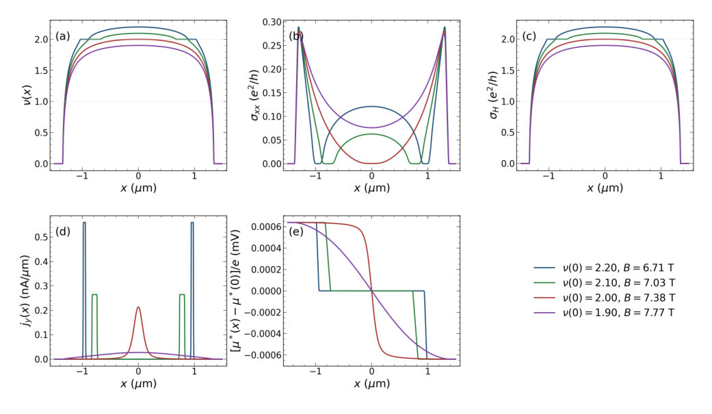
<figcaption class="paper-figure-caption"><b>Fig 1.</b> FIG. 1. Class A. DC solution in linear response (I ≃98 pA, eVH/ℏωc ≃10−4) at the four fields in the legend, labelled by the central filling factor. (a) Local filling factor; the flat segments at ν = 2 are the incompressible strips. (b) Local longitudinal conductivity, whose zeros locate the strips. (c) Local Hall conductivity, tracking ν(x). (d) Current density, confined to the strips and collapsing onto a central peak at ν(0) = 2.00; by Eq. (15) this is also the profile of the Joule power. (e) Electrochemical potential relative to the centre of the bar, antisymmetric, with steps where the current density peaks.</figcaption>
</figure>
<figure class="paper-figure-card">
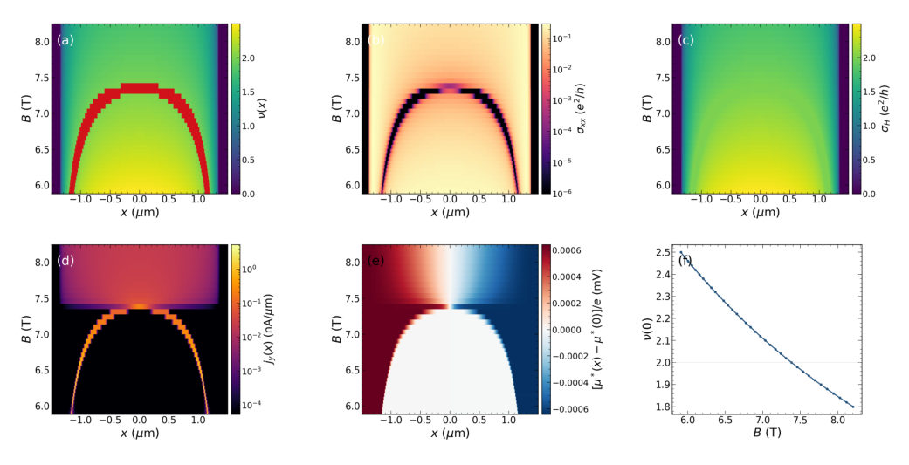
<figcaption class="paper-figure-caption"><b>Fig 2.</b> FIG. 2. Class A. The quantities of Fig. 1 along the field scan, in the same linear-response limit. (a) Local filling factor with the incompressible region ν = 2 in red: a band of finite width that migrates outwards as the field is lowered and closes across the centre between 7.28 and 7.42 T. (b) σxx on a logarithmic scale, five decades below the compressible background along the same crescent. (c) σH. (d) Current density on a logarithmic scale, following the arcs; above 7.6 T it spreads across the bar. (e) Electrochemical potential relative to the centre, the step tracking the strips. (f) Central filling factor, crossing two at 7.42 T. The solution is symmetric under x →−x throughout.</figcaption>
</figure>
<figure class="paper-figure-card">
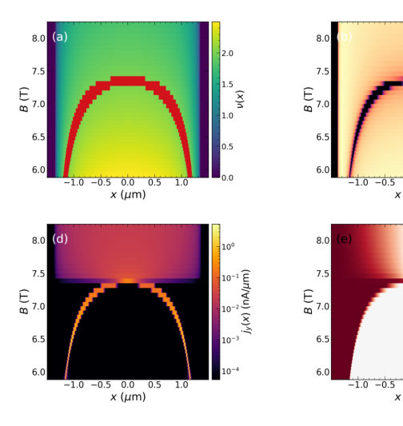
<figcaption class="paper-figure-caption"><b>Fig 3.</b> Figure 6 is the resistance scan computed at f = 1 kHz about a DC profile determined self-consistently at I = 408 nA (VH = 5.366 mV, eVH/ℏωc = 0.425), the first point at which the feedback of Sec. VIII is active. Rxy</figcaption>
</figure>
<figure class="paper-figure-card">
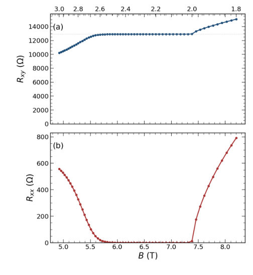
<figcaption class="paper-figure-caption"><b>Fig 4.</b> FIG. 3. Class A. (a) Hall and (b) longitudinal resistance from Eq. (12) along the scan of Fig. 2; the upper axis gives ν(0) and the dotted line h/2e2. The plateau runs from 5.7 T to 7.42 T. The high-field edge falls exactly at ν(0) = 2, where the last incompressible region disappears; the low-field edge is set by the removal of strips narrower than 2λ and is kernel- dependent.</figcaption>
</figure>
<figure class="paper-figure-card">

<figcaption class="paper-figure-caption"><b>Fig 5.</b> Figure 7 shows ν(x), σl and σH, jy/I and [µ∗(x) − µ∗(0)]/ℏωc at B = 5.5, 6.5 and 7.5 T for the three cur- rents. The three columns are the three regimes of Fig. 3 read at finite current. At 5.5 T, below the plateau in all three runs (Fig. 13), ν(0) ≃2.8, the bulk is compressible, and the strips at |x| ≃0.9d are narrow. The current is spread across the bar at 0.4 I/d with peaks at the strips that shrink with current — from 7 I/d at 1 µA to 2 I/d at 5 µA on the</figcaption>
</figure>
</div>

<p><strong>Summary.</strong> This work provides a detailed semiclassical reassessment of transport in the integer quantum Hall effect, treating the system as quasilocal. It shows that current and associated Joule heating are confined to narrow, incompressible strips. The model successfully incorporates finite-current feedback and local thermal effects, predicting that heating in these strips can lead to the breakdown of the quantized state.</p>
<p><strong>Why it may be interesting.</strong> The detailed coupling of non-equilibrium thermodynamics (Joule heating) with quantum transport theory (QHE) provides a rigorous framework for understanding breakdown mechanisms in mesoscopic quantum devices.</p>
<details>
<summary>Detailed structure</summary>
<p><strong>Main problem.</strong> The paper reassesses the semiclassical understanding of transport in the integer quantum Hall effect, focusing on the interplay between adiabatic separation, local Ohm's law, and the resulting Joule heating.</p>
<p><strong>Main result.</strong> The theory establishes that transport is quasilocal, with current and Joule power concentrating in narrow, incompressible strips. Finite current drives break symmetry, and local thermal closure suggests these strips can heat significantly.</p>
<p><strong>Method.</strong> The authors employ an adiabatic separation approach (Born-Oppenheimer) to decouple fast cyclotron motion from slow guiding-center drift, leading to a self-consistent, quasilocal Ohm's law framework.</p>
<p><strong>Model / system.</strong> The system is a 2D electron gas in a perpendicular magnetic field, confined by a potential $V(x)$. The model self-consistently couples transport (via local conductivity $\sigma$) with electrostatics (Poisson's equation) and energy balance (local thermal closure).</p>
<p><strong>Key observables.</strong> Hall resistance ($
ho_H$), Joule power density ($j \cdot E$), local electron temperature ($T_e(x)$), and the adiabatic parameter ($\epsilon_{ad}$).</p>
<p><strong>Important parameters / regimes.</strong> Magnetic length ($\ell$), cyclotron gap ($\hbar\omega_c$), and the adiabatic parameter $\epsilon_{ad} = \ell|
abla V|/\hbar\omega_c$.</p>
<p><strong>Assumptions / limitations.</strong> The analysis relies on the adiabatic separation approximation and assumes a local energy balance closure for thermal effects, which are noted as estimates.</p>
<p><strong>Figures summary.</strong> Figures illustrate current-reversal tests showing symmetry breaking and temperature profiles ($T_e(x)$) derived from local energy balance equations under finite current drive.</p>
<p><strong>Paper structure.</strong> The paper builds a theoretical hierarchy: Landau spectrum $
ightarrow$ adiabatic separation $
ightarrow$ quasilocal Ohm's law $
ightarrow$ current-driven electrostatics and thermal closure. It analyzes DC, AC, and finite-current regimes sequentially.</p>
</details>
<details>
<summary>Abstract</summary>
<p>We reassess the semiclassical route to integer quantum Hall transport around one idea: the separation of fast, quantised cyclotron motion from a slow, self-consistently screened guiding-centre landscape. Bohr--Sommerfeld quantisation of the canonical action fixes the Landau spectrum; smooth confinement turns it into Born--Oppenheimer surfaces with adiabatic parameter $\ell|\nabla V|/\hbarω_c$; screening supplies the self-consistent field. Transport is quasilocal, $R_H=\intρ_Hj_y\,dx/\int j_y\,dx$ with $j_y\propto1/ρ_l$, so within the regularised local Ohm model the incompressible strips attract the current by weight and the computed Joule-power profile follows the current profile. In linear response the intrinsic electrostatic AC correction of the frozen-profile model is reactive, $\mathrm{Im}\,R_H\proptoω$, with $\mathrm{Re}\,R_H-R_H^{\rm DC}\proptoω^{2}$ below $10^{-9}$ up to $2$~MHz. With the current fed back into the electrostatics at $1$--$5\,μ$A, where the Hall drop is one to five cyclotron gaps, the driven boundary condition breaks the reflection symmetry of the bar, the Hall drop concentrates in one strip (interchanged to $10^{-9}$ under current reversal), and the plateau narrows from its low-field flank while, for the GaAs parameters studied, its high-field edge stays at $ν(0)=2$. A local transverse thermal closure inspired by Akera, evaluated as a post-process on the frozen profile with two phonon-loss laws, indicates that the narrow current-carrying strips of the low-field flank may heat by of order the lattice temperature; with the activated-heat-capacity closure the cold strip loses its stationary solution at model-dependent currents of $0.3$--$2\,μ$A. The thermal conclusions are bounded by the loss law and by the frozen profile, and are presented as estimates.</p>
</details>
<p><sub><a href="#top">↑ back to top</a></sub></p>

<p><a id="paper-2609.15282"></a></p>
<h3 id="growth-of-superconducting-boron-doped-diamond-on-4inch-silicon-wafers"><a href="http://arxiv.org/abs/2609.15282v1">Growth of superconducting boron doped diamond on 4inch silicon wafers</a></h3>
<p><strong>Authors:</strong> Soumen Mandal, Oliver A Williams<br>
<strong>Type:</strong> experiment · <strong>Category:</strong> other · <strong>PDF:</strong> <a href="https://arxiv.org/pdf/2609.15282v1">https://arxiv.org/pdf/2609.15282v1</a><br>
<strong>Analysis basis:</strong> full PDF text, analyzed in chunks
<strong>Topic relevance:</strong> <code>QC/QI experiment</code> <strong>2/5</strong> · <code>analog quantum simulation</code> <strong>2/5</strong></p>
<div class="figure-strip-hint">↔ Scroll figures horizontally</div>
<div class="paper-figures-scroll">
<figure class="paper-figure-card">
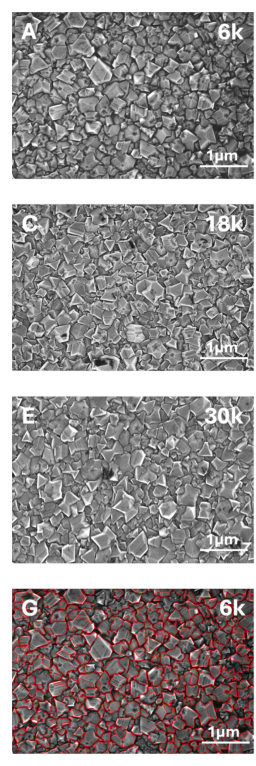
<figcaption class="paper-figure-caption"><b>Fig 1.</b> Figure 1: SEM images of boron-doped diamond films grown on 4-inch silicon wafers. Panels</figcaption>
</figure>
<figure class="paper-figure-card">
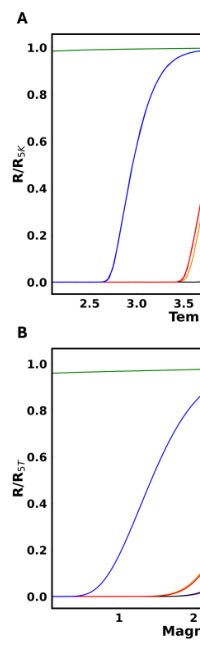
<figcaption class="paper-figure-caption"><b>Fig 2.</b> Figure 2: (a) Normalised resistance as a function of temperature for the boron-doped diamond</figcaption>
</figure>
<figure class="paper-figure-card">
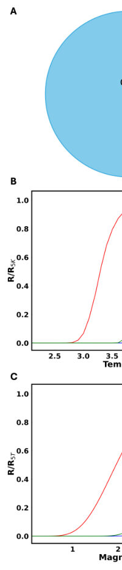
<figcaption class="paper-figure-caption"><b>Fig 3.</b> Figure 3: (a) Schematic showing the approximate positions of the pieces used for the wafer-</figcaption>
</figure>
<figure class="paper-figure-card">
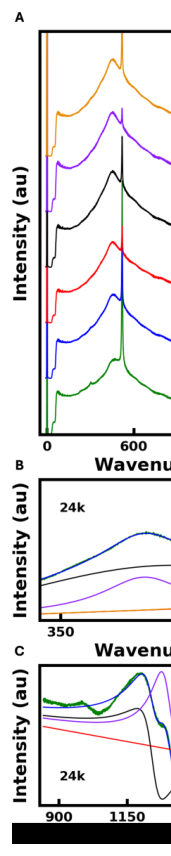
<figcaption class="paper-figure-caption"><b>Fig 4.</b> Figure 4: (a) Raman spectra of BDD films grown using increasing gas-phase B/C ratios</figcaption>
</figure>
</div>

<p><strong>Summary.</strong> This work reports on the successful, large-area growth of superconducting boron-doped diamond films on 4-inch silicon wafers using plasma CVD. By systematically varying the boron precursor ratio, the authors optimized the superconducting transition temperature ($T_c$) to 4.03 K. The research highlights that achieving uniform, high-performance superconducting films over large substrates requires careful control over boron incorporation and addresses the scaling challenges from smaller to larger wafers.</p>
<p><strong>Why it may be interesting.</strong> While the material science is far from quantum information, the study of superconductivity itself involves quantum phenomena (Cooper pairs, critical fields) and the optimization of material parameters (doping, uniformity) for quantum devices is a key engineering challenge.</p>
<details>
<summary>Detailed structure</summary>
<p><strong>Main problem.</strong> The study investigates the growth and superconducting properties of boron-doped diamond (BDD) films on large-area (4-inch) silicon wafers to enable scalable superconducting devices.</p>
<p><strong>Main result.</strong> Superconducting BDD films were successfully grown over a substantial 4-inch area, demonstrating a peak critical temperature ($T_c$) of 4.03 K, though radial uniformity and boron incorporation efficiency were found to be critical limiting factors.</p>
<p><strong>Method.</strong> The authors used microwave plasma CVD to grow the films, characterizing them using low-temperature electrical transport measurements (van der Pauw) and Raman spectroscopy to map boron concentration.</p>
<p><strong>Model / system.</strong> The physical system is superconducting boron-doped diamond (BDD) grown epitaxially on silicon substrates. The study varies the gas-phase B/C ratio and examines spatial variations across the wafer.</p>
<p><strong>Key observables.</strong> Superconducting transition temperature ($T_c$), upper critical field ($H_{c2}$), boron concentration (measured by Raman), and film morphology.</p>
<p><strong>Important parameters / regimes.</strong> Gas-phase B/C ratio (6536 to 36421 ppm), substrate size (2-inch vs. 4-inch), and radial position (center vs. edge).</p>
<p><strong>Assumptions / limitations.</strong> The primary assumption is that the superconducting properties are strongly correlated with the boron concentration, which is measured via Raman spectroscopy, though the interpretation of Raman data for bulk concentration is noted as challenging.</p>
<p><strong>Figures summary.</strong> Figures show SEM images confirming uniform morphology, and resistance vs. temperature/field curves illustrating the superconducting transition, with spatial measurements showing $T_c$ variation across the wafer.</p>
<p><strong>Paper structure.</strong> The paper follows a structure of presenting growth parameters (B/C ratio), characterizing resulting film properties ($T_c$, $H_{c2}$), analyzing the relationship between doping (Raman) and superconductivity, and finally comparing large-area (4-inch) results to smaller-scale (2-inch) work.</p>
</details>
<details>
<summary>Abstract</summary>
<p>Superconducting boron-doped diamond (BDD) films were grown on 4-inch silicon wafers by microwave plasma chemical vapour deposition using gas-phase B/C ratios ranging from 6536 to 36421 ppm. Surface morphology, boron incorporation and superconducting properties were investigated as a function of gas-phase boron concentration. No systematic variation in apparent lateral grain size was observed across the series. Superconductivity was observed in all films except that grown at a B/C ratio of 6536 ppm within the measured temperature range down to 2 K. The superconducting transition temperature initially increased with increasing B/C ratio, reaching a maximum T$_c$ of 4.03 K at 24691 ppm, before decreasing at higher gas-phase B/C ratios. The corresponding resistive upper critical field at 2 K reached 3.091 T. Raman spectroscopy showed an increase in boron incorporation with increasing gas-phase B/C ratio up to 30303 ppm, followed by a slight decrease at 36421 ppm. Spatial measurements across the film grown at 24691 ppm showed T$_c$ values of 4.02, 4.19 and 3.33 K at the centre, intermediate and edge positions, respectively, with Raman spectroscopy showing a corresponding spatial variation in boron concentration. Comparison with previous growth on 2-inch wafers showed that substantially higher gas-phase B/C ratios were required to obtain comparable boron concentrations and superconducting properties on 4-inch wafers, indicating reduced boron incorporation efficiency during large-area growth. These results demonstrate the feasibility of producing superconducting BDD over a substantial area of a 4-inch silicon wafer while identifying boron incorporation and radial uniformity as key parameters for further wafer-scale optimisation.</p>
</details>
<p><sub><a href="#top">↑ back to top</a></sub></p>

<p><a id="paper-2609.14683"></a></p>
<h3 id="persistent-nonlinear-hall-effect-driven-by-parallel-field-across-a-topological-phase-transition-and-intraband-sign-reversing-integer-quantum-hall-effect"><a href="http://arxiv.org/abs/2609.14683v1">Persistent nonlinear Hall effect driven by parallel field across a topological phase transition and intraband sign-reversing integer quantum Hall effect</a></h3>
<p><strong>Authors:</strong> Suheel Ahmad Malik, M. A. H. Ahsan, SK Firoz Islam<br>
<strong>Type:</strong> theory · <strong>Category:</strong> other · <strong>PDF:</strong> <a href="https://arxiv.org/pdf/2609.14683v1">https://arxiv.org/pdf/2609.14683v1</a><br>
<strong>Analysis basis:</strong> full PDF text, analyzed in chunks
<strong>Topic relevance:</strong> <code>Keldysh / 2PI / non-Gaussian methods</code> <strong>2/5</strong> · <code>analog quantum simulation</code> <strong>1/5</strong></p>
<div class="figure-strip-hint">↔ Scroll figures horizontally</div>
<div class="paper-figures-scroll">
<figure class="paper-figure-card">
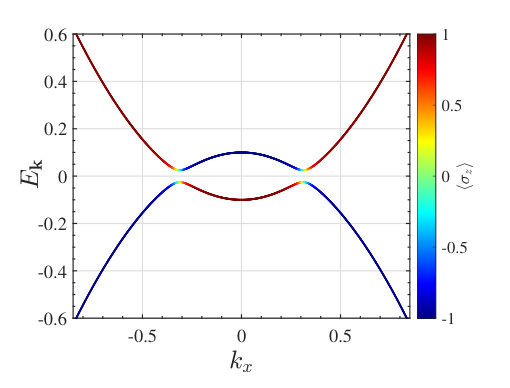
<figcaption class="paper-figure-caption"><b>Fig 1.</b> FIG. 1. Energy spectrum of the nodal ring semimetal with RSOC. The momentum axis is normalized by a typical Fermi wave vector kF corresponding to standard 2D electron density, whereas the energy axis is normalized by ǫk2 F . The band gap is shown along the radius at k = R. The magnitude of out-of- plane spin polarization is shown by the color bar. Parameters taken are R = 0.3 and α = 0.08 in the unit of kF and ǫkF</figcaption>
</figure>
<figure class="paper-figure-card">
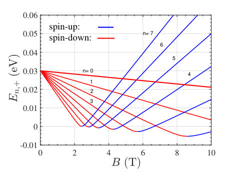
<figcaption class="paper-figure-caption"><b>Fig 2.</b> FIG. 2. The LL spectrum for first few n are plotted with the magnetic field for the conduction band. The red and blue colors indicate the down and up out-of plane spin polarization, respectively. The same LL undergoes spin sign reversal upon a change in the magnetic field. Parameters taken are ǫR2 = 0.03 eV and α = 10−11 eV-m</figcaption>
</figure>
<figure class="paper-figure-card">
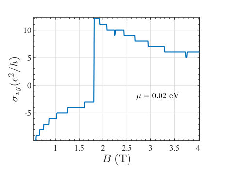
<figcaption class="paper-figure-caption"><b>Fig 3.</b> FIG. 3. The Hall conductivity is plotted the magnetic field B(T ) by keeping the chemical potential µ = 0.02 eV with other parameters same as in Fig. (2).</figcaption>
</figure>
<figure class="paper-figure-card">
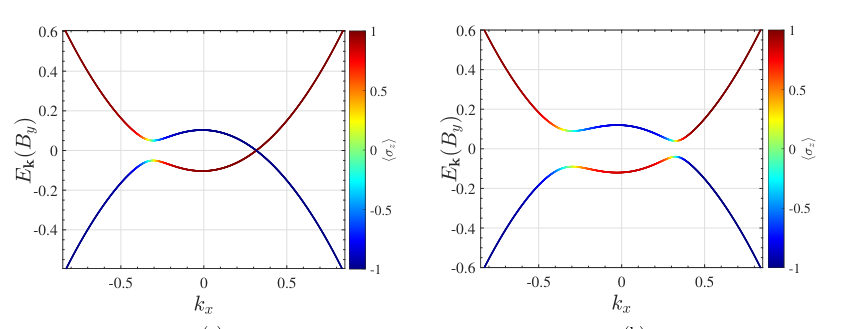
<figcaption class="paper-figure-caption"><b>Fig 4.</b> FIG. 4. Energy spectrum of the system driven by the parallel magnetic field. Fig. 4(a) shows the closing of the nodal gap at (Bx, By) = (0, Bc y). In Fig. 4(b), we show that the nodal gap opens beyond Bc y but with Chern number CB = 0, i.e., a trivial insulator. Energy and momentum are taken in the unit ǫk2 F and kF respectively. Parameters used are R = 0.3 and α = 0.08 in the units of kF and ǫkF respectively.</figcaption>
</figure>
<figure class="paper-figure-card">
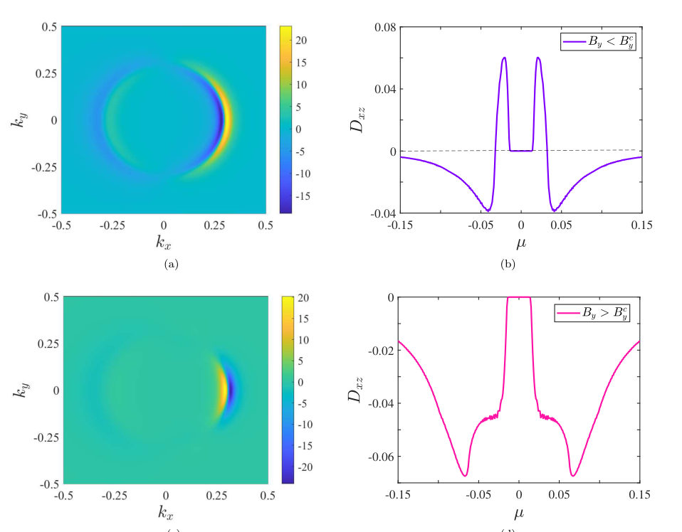
<figcaption class="paper-figure-caption"><b>Fig 5.</b> FIG. 5. The Berry curvature density of the parallel field driven system for (a) Chern insulating phase and (c) trivial insulating phase are plotted in momentum space. The corresponding BCDs are plotted in (b) and (d), respectively. We plot only Dxz component of the Berry curvature dipole (BCD) as the other components are zero. Here, we normalize vxΩz and Dxz by vF k−2 F and k−1 F , respectively.</figcaption>
</figure>
</div>

<p><strong>Summary.</strong> This theoretical work analyzes magnetotransport in a 2D nodal ring system, demonstrating how applying a parallel magnetic field can drive the system through a topological phase transition. The key finding is that the nonlinear Hall effect remains measurable and exhibits distinct, characteristic signatures in both the topological and trivial insulating phases, making it a powerful diagnostic tool for such transitions.</p>
<p><strong>Why it may be interesting.</strong> The concept of using a nonlinear transport coefficient (like the nonlinear Hall effect) as a robust, measurable probe for characterizing topological phase transitions is highly relevant for experimental condensed matter physics.</p>
<details>
<summary>Detailed structure</summary>
<p><strong>Main problem.</strong> The study investigates the linear and nonlinear Hall effects in a 2D Rashba spin-orbit coupled nodal ring system, specifically examining how the nonlinear Hall effect can serve as a robust probe for topological phase transitions.</p>
<p><strong>Main result.</strong> The nonlinear Hall effect persists across a topological phase transition (Chern insulator to trivial insulator) induced by an in-plane magnetic field, exhibiting distinct sign-changing signatures in the topological phase versus a single-sign response in the trivial phase.</p>
<p><strong>Method.</strong> The analysis uses semiclassical Boltzmann transport theory and calculates the second-order anomalous Hall response using the Berry curvature dipole (BCD) density.</p>
<p><strong>Model / system.</strong> The model is a two-dimensional Rashba spin-orbit coupled nodal ring electronic system, whose Hamiltonian is modified by both perpendicular and parallel magnetic fields.</p>
<p><strong>Key observables.</strong> Nonlinear Hall conductivity, topological gap closing/reopening, Berry curvature dipole (BCD), and the sign of the quantum Hall conductivity.</p>
<p><strong>Important parameters / regimes.</strong> Rashba SOC strength ($\alpha$), nodal ring radius ($R$), and the strength of the parallel magnetic field ($B_{||}$).</p>
<p><strong>Assumptions / limitations.</strong> The calculations rely on the relaxation time approximation for the Boltzmann equation and assume the nonlinear Hall response is dominated by the intra-band BCD.</p>
<p><strong>Figures summary.</strong> Figures illustrate the energy spectrum showing gap closing/reopening, and plots display the Berry curvature density and the BCD for both the Chern insulating and trivial insulating phases.</p>
<p><strong>Paper structure.</strong> The paper progresses from analyzing linear and anomalous Hall effects (including IQHE with perpendicular fields) to introducing the parallel field, which induces the nonlinear Hall effect and drives the topological phase transition, culminating in the diagnostic comparison of the nonlinear response across the transition.</p>
</details>
<details>
<summary>Abstract</summary>
<p>We investigate the linear and nonlinear Hall effects in a two-dimensional Rashba spin-orbit coupled nodal ring electronic system. We consider both the cases of linear Hall effect, the Berry curvature induced anomalous Hall and the perpendicular magnetic field-induced integer quantum Hall effect. We observe that the system exhibits a topological gap along the boundary of the nodal ring that strongly depends on the radius of the nodal ring and the strength of the Rashba spin-orbit interaction, resulting in the quantum anomalous Hall effect. Subsequently, we include a perpendicular uniform magnetic field and obtain the exact Landau levels that exhibit sign reversal in the slope with magnetic field around the ring boundary. This causes a sign reversal in the quantum Hall conductivity in the same band by tuning the magnetic field. Most importantly, we also show that when the magnetic field is strictly parallel to the system, it can induce an anisotropy to the Berry curvature that leads to the emergence of the nonlinear Hall effect. Additionally, tuning the parallel field can close and reopen the topological gap, resulting in the reverse topological phase transition from the topological Chern insulator to a trivial insulator. The nonlinear Hall effect remains persistent in both phases, but its dependence on the chemical potential exhibits distinct signatures. Noticeably, the nonlinear Hall response exhibits a sign-changing peak structure in Chern insulating phase whereas it displays a single-sign response in trivial insulating phase. These distinct signatures suggest that nonlinear Hall can serve as a probe to study such a topological phase transition.</p>
</details>
<p><sub><a href="#top">↑ back to top</a></sub></p>

<p><a id="paper-2609.13493"></a></p>
<h3 id="liquid-phase-near-field-infrared-nanoscopy-of-ion-exchange-reactions"><a href="http://arxiv.org/abs/2609.13493v1">Liquid-Phase Near-Field Infrared Nanoscopy of Ion-Exchange Reactions</a></h3>
<p><strong>Authors:</strong> Wassie M. Takele, Teferi Sitotaw Yallew, Mason Caron, Yohannes Abate<br>
<strong>Type:</strong> experiment · <strong>Category:</strong> other · <strong>PDF:</strong> <a href="https://arxiv.org/pdf/2609.13493v1">https://arxiv.org/pdf/2609.13493v1</a><br>
<strong>Analysis basis:</strong> full PDF text, analyzed in chunks
<strong>Topic relevance:</strong> <code>quantum measurements</code> <strong>2/5</strong></p>
<div class="figure-strip-hint">↔ Scroll figures horizontally</div>
<div class="paper-figures-scroll">
<figure class="paper-figure-card">
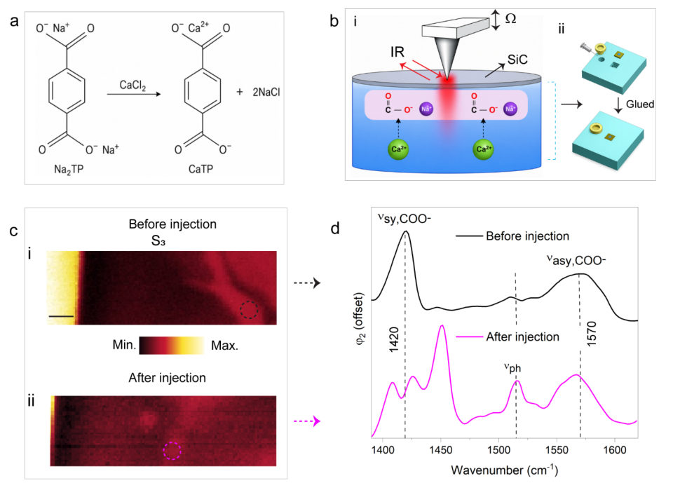
<figcaption class="paper-figure-caption"><b>Fig 1.</b> Figure 1. Liquid-phase infrared near-field nanoscopy of metal–carboxylate ion interactions. (a) Ca²⁺/Na⁺ ion-exchange reaction between disodium terephthalate (Na₂TP) and CaCl₂, resulting in the formation of calcium terephthalate (CaTP). (b) Liquid-phase measurement platform: (i) schematic of mid-IR near-field probing through a 30 nm SiC membrane, where illumination of the metallized AFM tip generates a confined near field that penetrates the membrane and probes the hydrated sample beneath it; (ii) assembly of the 3D-printed liquid reservoir and SiC membrane chip, including the injection port for introducing CaCl₂ solution. (c) Broadband near-field amplitude images, S₃, acquired before (i)...</figcaption>
</figure>
<figure class="paper-figure-card">
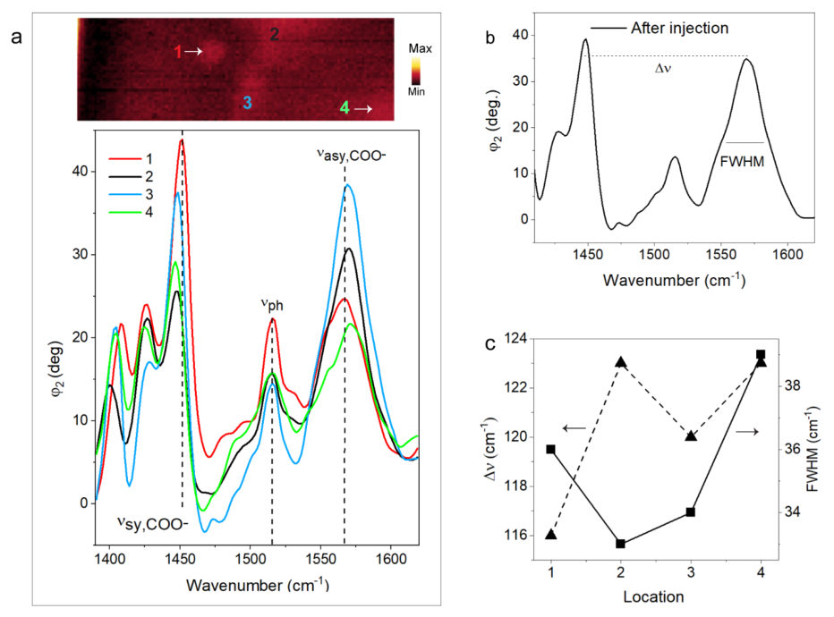
<figcaption class="paper-figure-caption"><b>Fig 2.</b> Figure 2. Spatially resolved nano-FTIR spectral analysis of the CaTP vibrational response after CaCl₂ injection. (a) (a) The top panel shows the broadband near-field amplitude image, with numbered locations indicating the spectral acquisition locations. The bottom panel shows the corresponding nano-FTIR phase spectra acquired at locations 1–4. (b) Representative nano-FTIR spectrum of CaTP, illustrating the determination of the carboxylate stretching-mode separation, Dn = nasy (COO-) - nsy (COO-), and the FWHM. (c) Variation in Dn (left axis) and the FWHM of the nasy</figcaption>
</figure>
<figure class="paper-figure-card">
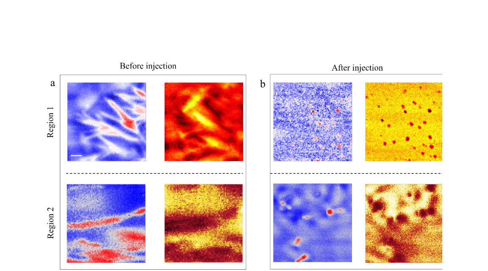
<figcaption class="paper-figure-caption"><b>Fig 3.</b> Figure 3. Vibrational nanoimaging of Ca²⁺/Na⁺ ion exchange and CaTP precipitation at two representative regions. Near-field phase, φ₂, and amplitude, S2, images acquired at 1570 cm⁻¹ before and after CaCl₂ injection. The top and bottom rows correspond to two different regions beneath the SiC membrane. At both locations, the initially extended near-field response becomes more localized after injection, consistent with Ca²⁺/Na⁺ ion exchange and CaTP particle formation. The scale bar is 2 μm. Finally, complementary solid-state nano-FTIR measurements were performed to establish the characteristic vibrational response of CaTP obtained from the liquid-phase reaction. Dry CaTP samples were...</figcaption>
</figure>
<figure class="paper-figure-card">
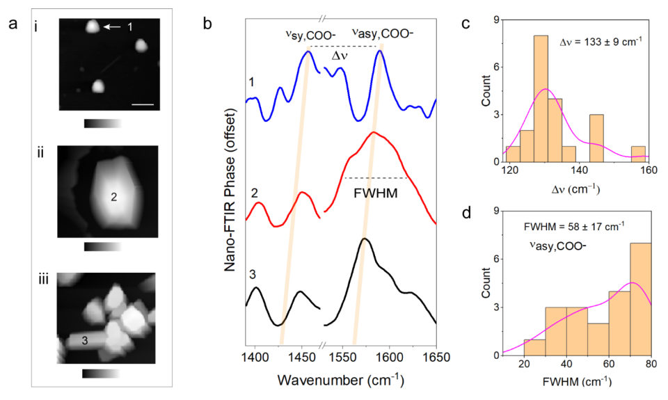
<figcaption class="paper-figure-caption"><b>Fig 4.</b> Figure 4. Solid-state nano-FTIR characterization of calcium terephthalate (CaTP). (a) Representative AFM topography images of CaTP particles. (b) Nano-FTIR phase spectra acquired from the corresponding particles in (a). (c) Distribution of Δν values obtained from 20 nano-FTIR spectra, yielding an average separation of 133 ± 9 cm⁻¹. (d) Distribution of the FWHM of the νasy, COO⁻ band for 20 locations, with a mean value of 58 ± 17 cm⁻¹.</figcaption>
</figure>
</div>

<p><strong>Summary.</strong> This work presents a novel liquid-phase near-field infrared nanoscopy technique using a $  ext{SiC}$ membrane to study chemical reactions in aqueous solutions. The authors successfully monitored the $   ext{Ca}^{2+}/   ext{Na}^{+}$ ion-exchange reaction, observing both the physical precipitation of a MOF and the corresponding, chemically specific changes in the carboxylate vibrational modes. This demonstrates a powerful tool for studying complex chemical processes under near-native conditions.</p>
<p><strong>Why it may be interesting.</strong> While not directly quantum physics, the ability to monitor chemical reactions at the nanoscale in native liquid environments is crucial for studying quantum processes occurring at interfaces, such as electrochemical reactions or biological quantum coherence.</p>
<details>
<summary>Detailed structure</summary>
<p><strong>Main problem.</strong> The primary challenge addressed is the in situ monitoring of chemical reactions, specifically ion-exchange, with high chemical specificity and nanometer-scale spatial resolution while the reaction occurs in an aqueous liquid phase.</p>
<p><strong>Main result.</strong> The authors successfully demonstrated that liquid-phase near-field nanoscopy can monitor the $ ext{Ca}^{2+}/   ext{Na}^{+}$ ion-exchange reaction, providing both spatially resolved evidence of precipitate formation and local spectroscopic signatures of the changing metal-ligand coordination environment.</p>
<p><strong>Method.</strong> The technique utilizes a custom liquid cell with a $    ext{SiC}$ membrane, enabling near-field infrared nanoimaging and nanospectroscopy (Nano-FTIR) to probe the liquid sample beneath the membrane.</p>
<p><strong>Model / system.</strong> The system studied is the ion-exchange reaction between disodium terephthalate ($   ext{Na}_2   ext{TP}$) and $ ext{CaCl}_2$ solution, leading to the formation of calcium terephthalate ($ ext{CaTP}$), a Metal-Organic Framework (MOF)-type coordination phase.</p>
<p><strong>Key observables.</strong> Symmetric and asymmetric carboxylate stretching vibrational modes ($   ext{COO}^-$), peak shifts, linewidth changes in $   ext{nano-FTIR}$ spectra, and changes in near-field amplitude contrast.</p>
<p><strong>Important parameters / regimes.</strong> Nanometer spatial resolution, aqueous conditions, and the specific vibrational modes associated with carboxylate coordination.</p>
<p><strong>Assumptions / limitations.</strong> The use of a $   ext{SiC}$ membrane is a necessary engineering solution to allow near-field coupling while mitigating strong water absorption in the mid-IR spectrum.</p>
<p><strong>Figures summary.</strong> Figures illustrate the setup, showing the $    ext{SiC}$ membrane cell, and present comparative data: near-field amplitude images showing precipitate emergence, and $ ext{nano-FTIR}$ phase spectra detailing vibrational shifts before and after $   ext{CaCl}_2$ injection.</p>
<p><strong>Paper structure.</strong> The paper introduces the challenge of aqueous, nanoscale chemical monitoring, details the novel $  ext{SiC}$-membrane liquid-phase platform, presents the $    ext{Ca}^{2+}/   ext{Na}^{+}$ ion-exchange experiment, and analyzes the resulting spectroscopic and imaging evidence to validate the technique's capability.</p>
</details>
<details>
<summary>Abstract</summary>
<p>In situ monitoring of reactions with chemical specificity and nanometer-scale spatial resolution under aqueous conditions remains a long-standing experimental challenge. Here, we use thin SiC membrane-enabled liquid-phase infrared nanoimaging and nanospectroscopy to monitor Ca$^{2+}$/Na$^{+}$ ion exchange in a mixture of disodium terephthalate and CaCl$_2$ solution. Beneath the membrane, we follow the formation of calcium terephthalate (CaTP), a metal-organic framework (MOF)-type coordination phase in which terephthalate ligands link Ca$^{2+}$ centers. The symmetric and asymmetric carboxylate stretching modes serve as chemically specific near-field reporters of Ca$^{2+}$ coordination to the terephthalate linkers. Nano-FTIR spectra reveal pronounced peak shifts and linewidth changes in these vibrational modes, indicating modification of the carboxylate coordination environment during CaTP formation. Complementary near-field nanoimaging resolves the emergence of nanoscale precipitates beneath the SiC membrane following CaCl$_2$ injection, providing spatially resolved evidence of the formation of the CaTP coordination framework. Solid-phase nanoimaging and nanospectroscopy identify well-defined CaTP particles, providing further evidence for crystalline CaTP formation. We demonstrate that the chemistry of metal-ligand interactions can be monitored in situ via liquid-phase near-field nanoscopy. This capability could enable the study of catalytic, electrochemical, and biological processes under native aqueous conditions.</p>
</details>
<p><sub><a href="#top">↑ back to top</a></sub></p>

<p><a id="paper-2609.15712"></a></p>
<h3 id="wrinkles-and-magnetic-flux-trapping-in-graphite-nanoflakes-a-possible-source-and-manifestation-of-room-temperature-superconductivity"><a href="http://arxiv.org/abs/2609.15712v1">Wrinkles and Magnetic Flux Trapping in Graphite Nanoflakes: A Possible Source and Manifestation of Room-Temperature Superconductivity</a></h3>
<p><strong>Authors:</strong> Muhammad Saad, Sergey I. Nikitin, Dmitry A. Tayurskii, Roman V. Yusupov<br>
<strong>Type:</strong> experiment · <strong>Category:</strong> strongly correlated electrons · <strong>PDF:</strong> <a href="https://arxiv.org/pdf/2609.15712v1">https://arxiv.org/pdf/2609.15712v1</a><br>
<strong>Analysis basis:</strong> full PDF text, analyzed in chunks
<strong>Topic relevance:</strong> <code>analog quantum simulation</code> <strong>2/5</strong></p>
<div class="figure-strip-hint">↔ Scroll figures horizontally</div>
<div class="paper-figures-scroll">
<figure class="paper-figure-card">
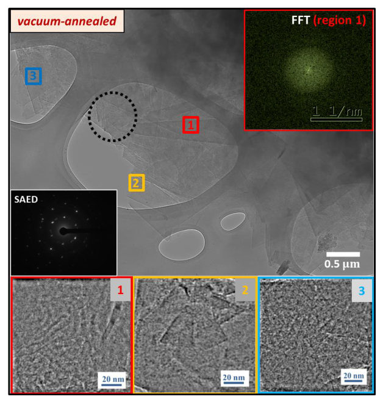
<figcaption class="paper-figure-caption"><b>Fig 1.</b> Figure 3: TEM analysis of the vacuum-annealed graphite nanoflake sample (same figure</figcaption>
</figure>
<figure class="paper-figure-card">
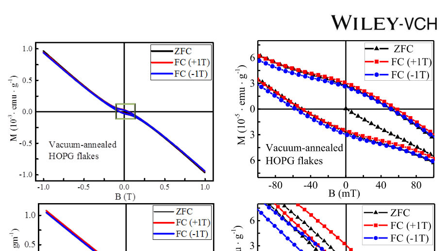
<figcaption class="paper-figure-caption"><b>Fig 2.</b> Figure 6: Magnetization M(H) dependences at T = 10 K for the as-prepared, vacuum-</figcaption>
</figure>
</div>

<p><strong>Summary.</strong> This experimental work proposes that wrinkles formed on the basal plane of graphite nanoflakes are the source of local high-temperature superconductivity. By comparing samples annealed in air versus vacuum, the authors found that air annealing creates these wrinkles, which are directly correlated with the detection of trapped magnetic flux persisting well above room temperature.</p>
<p><strong>Why it may be interesting.</strong> Although focused on solid-state materials, the study explores how engineered structural defects (wrinkles) can induce emergent quantum phenomena (high-Tc superconductivity) in a layered material, which relates to understanding correlated electronic states in low-dimensional systems.</p>
<details>
<summary>Detailed structure</summary>
<p><strong>Main problem.</strong> The paper investigates the possibility that local high-temperature superconductivity can be induced in graphite nanoflakes.</p>
<p><strong>Main result.</strong> The formation of high-density wrinkle-type defects on the basal plane, induced by air annealing, correlates strongly with the detection of trapped magnetic flux persisting above 390 K.</p>
<p><strong>Method.</strong> The study combines structural characterization using TEM/FFT and chemical analysis (XRD/XPS) with magnetic measurements (VSM) to correlate morphology changes with superconducting signatures.</p>
<p><strong>Model / system.</strong> The physical system is graphite nanoflakes derived from pyrolytic graphite, whose structure is manipulated by annealing in different atmospheres (vacuum vs. air). The key structural changes involve the transition from Moiré patterns to wrinkle arrays.</p>
<p><strong>Key observables.</strong> Wrinkle-type defects, magnetic flux trapping (measured via ZFC/FC hysteresis loops), and the persistence of magnetic signals above room temperature.</p>
<p><strong>Important parameters / regimes.</strong> Annealing temperature (670 K), magnetic field dependence, and the critical temperature range ($\geq 390$ K).</p>
<p><strong>Assumptions / limitations.</strong> The primary assumption is that the observed vertical shift in the magnetization hysteresis loop is due to trapped magnetic moments characteristic of superconductivity, and that the wrinkles are the structural source of this superconductivity.</p>
<p><strong>Figures summary.</strong> Figures compare SEM/TEM images of as-prepared, vacuum-annealed, and air-annealed samples, showing the progression from Moiré fringes to wrinkles. Magnetization curves (ZFC/FC) are used to demonstrate the enhanced magnetic anomaly in the air-annealed state.</p>
<p><strong>Paper structure.</strong> The paper follows a comparative experimental structure: first, characterizing the initial state (as-ground); second, analyzing the effect of vacuum annealing; and finally, detailing the crucial findings from air annealing, which links wrinkle formation to the superconducting magnetic signature.</p>
</details>
<details>
<summary>Abstract</summary>
<p>The paper reports on a possible manifestation of local high-temperature superconductivity in graphite nanoflakes obtained from the bulk pyrolytic graphite by an extended grinding and subsequent annealing at 670 K in the air. Analysis of transmission electron microscopy (TEM) images shows that such treatment leads to a formation of high-density wrinkle-type defects at the basal-plane surface. The sample reveals the magnetic flux trapping - one of the key signatures of superconductivity - that persists up to 390 K and above. At the same time, both the as-ground (unannealed) and annealed in the vacuum samples manifest negligible flux trapping, and no wrinkles in their TEM images were found. The direct correlation between the appearance of high-density wrinkle arrays and the detection of the trapped magnetic flux above the room temperature strongly suggests that wrinkled regions serve a source of local high-temperature superconductivity in graphite.</p>
</details>
<p><sub><a href="#top">↑ back to top</a></sub></p>

<p><a id="paper-2609.15619"></a></p>
<h3 id="beyond-binary-at-submicron-dimensions-crossed-ellipse-mtj-free-layers-as-multi-state-cells-for-spintronic-crossbars"><a href="http://arxiv.org/abs/2609.15619v1">Beyond binary at submicron dimensions: crossed-ellipse MTJ free layers as multi-state cells for spintronic crossbars</a></h3>
<p><strong>Authors:</strong> Arup Ghosh, Ariel Zaig, Colin Ducarme, Thomas Coppée, Flavio Abreu Araujo, Lior Klein<br>
<strong>Type:</strong> theory · <strong>Category:</strong> other · <strong>PDF:</strong> <a href="https://arxiv.org/pdf/2609.15619v1">https://arxiv.org/pdf/2609.15619v1</a><br>
<strong>Analysis basis:</strong> full PDF text, analyzed in chunks
<strong>Topic relevance:</strong> <code>Keldysh / 2PI / non-Gaussian methods</code> <strong>1/5</strong> · <code>analog quantum simulation</code> <strong>1/5</strong> · <code>driven-dissipative phase transition</code> <strong>1/5</strong> · <code>methods for driven-dissipative</code> <strong>1/5</strong> · <code>non-equilibrium universality</code> <strong>1/5</strong> · <code>quantum measurements</code> <strong>1/5</strong> · <code>scars &amp; prethermalization</code> <strong>1/5</strong></p>
<div class="figure-strip-hint">↔ Scroll figures horizontally</div>
<div class="paper-figures-scroll">
<figure class="paper-figure-card">
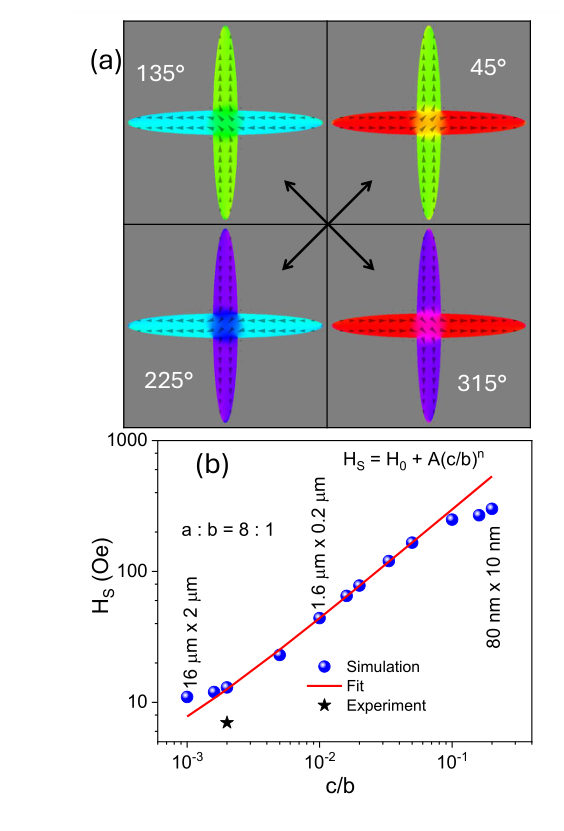
<figcaption class="paper-figure-caption"><b>Fig 1.</b> FIG. 1. Remanent-state configurations and size-dependent switching behavior of the crossed-ellipse device. Panel (a) shows the representative four remanent states for the 8 : 1 geometry, corresponding to the diagonal directions 45◦, 135◦, 225◦, and 315◦. Panel (b) shows the switching-field scaling with normalized thickness-to-width ratio c/b at fixed aspect ratio a : b = 8 : 1, together with a phenomenological fit. The black star symbol indicates the experimental switching field reported for the 8 µm × 1 µm four-state MTJ in Ref. [14]; the simulation overestimates this value by about a factor of two, consistent with the simplified isolated-free-layer model used here.</figcaption>
</figure>
<figure class="paper-figure-card">
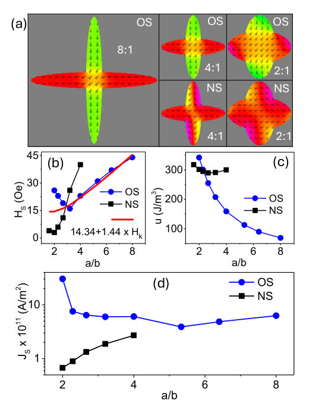
<figcaption class="paper-figure-caption"><b>Fig 2.</b> FIG. 3. Aspect-ratio dependence of remanent states, switch- ing field, remanent-state energy density, and SOT switch- ing current density for crossed Py ellipses with fixed major axis a = 1.6 µm. Panel (a) compares ordinary states (OS) and newly stabilized states (NS) for selected aspect ratios. Panel (b) shows the nonmonotonic dependence of Hs on a/b for the OS branch and the lower Hs associated with the NS branch. The red curve shows the effective-anisotropy compar- ison Hs = 14.34+1.44Hk. Panel (c) shows that the remanent- state energy density of the OS branch decreases with increas- ing a/b, while the NS branch remains nearly constant over the lower-aspect-ratio range. (d) Aspect-ratio...</figcaption>
</figure>
<figure class="paper-figure-card">
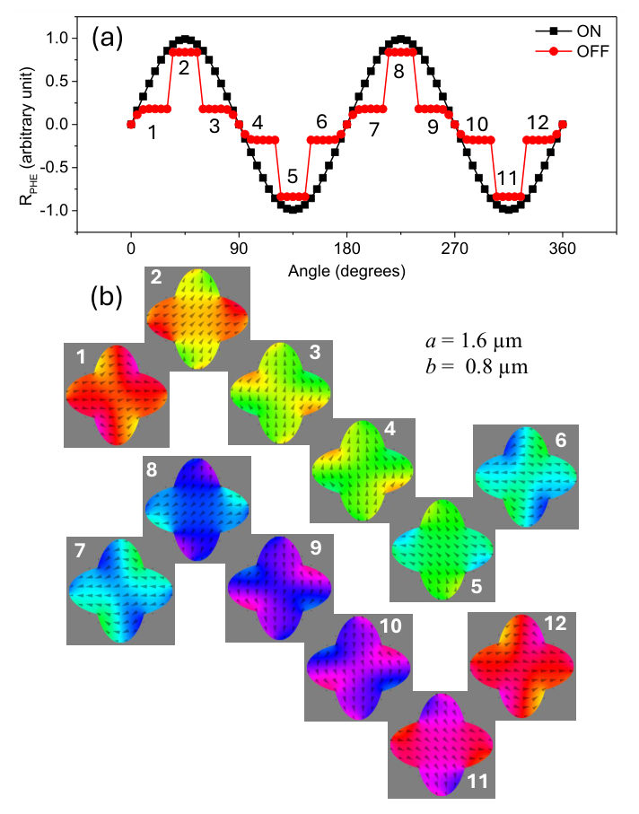
<figcaption class="paper-figure-caption"><b>Fig 3.</b> FIG. 4. (a) Angle-dependent simulated planar Hall response of the 1.6 µm × 0.8 µm crossed-ellipse device measured at an applied field of 100 Oe. The planar Hall response was calculated as RPHE = 2⟨mx⟩⟨my⟩. The field-on response, RPHE,ON, was obtained while the magnetic field was applied at each in-plane angle, whereas the field-off response, RPHE,OFF, was obtained after removing the field and relaxing the device into its remanent state. The twelve labeled plateaus indicate twelve accessible field-off remanent configurations in the lower-aspect-ratio geometry, as shown in panel (b).</figcaption>
</figure>
</div>

<p><strong>Summary.</strong> This work investigates using crossed-ellipse Magnetic Tunnel Junctions as multi-state memory elements for next-generation neuromorphic hardware. Using micromagnetic simulations, the authors show that tuning the geometry allows for the stabilization of numerous discrete magnetic states. The findings define a geometry-dependent design window for creating highly precise, energy-efficient spintronic crossbars.</p>
<p><strong>Why it may be interesting.</strong> While focused on condensed matter spintronics, the detailed study of energy landscapes, metastable states, and the transition between discrete quantum-like states (the remanent plateaus) under external fields provides valuable insights into non-equilibrium dynamics relevant to open quantum systems.</p>
<details>
<summary>Detailed structure</summary>
<p><strong>Main problem.</strong> The research aims to overcome the binary limitation of conventional Magnetic Tunnel Junctions (MTJs) to create high-density, multi-state memory cells for spintronic crossbars used in neuromorphic computing.</p>
<p><strong>Main result.</strong> By utilizing crossed-ellipse MTJ free layers, the authors demonstrate the stabilization of multiple remanent states (up to twelve) whose count depends on both the aspect ratio and absolute size of the device.</p>
<p><strong>Method.</strong> The study relies heavily on advanced micromagnetic simulations (MuMax3 and MuMax+) to model the magnetic switching dynamics and energy landscape of the MTJ free layers.</p>
<p><strong>Model / system.</strong> The physical system is a crossed-ellipse MTJ free layer, modeled using Permalloy (Py) and incorporating Spin-Orbit Torque (SOT) switching mechanisms via an underlying heavy metal layer (Ta or Pt).</p>
<p><strong>Key observables.</strong> Number of accessible remanent states (plateaus), switching field ($H_s$), switching current density ($J_s$), and the planar Hall response.</p>
<p><strong>Important parameters / regimes.</strong> Aspect ratio, absolute size scaling (e.g., from $16 \mu	ext{m} 	imes 2 \mu	ext{m}$ down to $80 	ext{ nm} 	imes 10 	ext{ nm}$), and bias fields ($H_{bias}$).</p>
<p><strong>Assumptions / limitations.</strong> The simulation assumes the state count is geometry-dependent, and while low-barrier escape pathways exist, the thermal independence of all states requires further investigation.</p>
<p><strong>Figures summary.</strong> Figures illustrate the scaling of switching fields and currents with device size, and the planar-Hall response resolving multiple discrete remanent plateaus for specific geometries.</p>
<p><strong>Paper structure.</strong> The paper progresses by first establishing the multi-state potential of the crossed-ellipse geometry, then quantifying the scaling laws for switching parameters ($H_s, J_s$) with size, and finally validating the results through independent simulations and sensitivity checks against bias fields and edge roughness.</p>
</details>
<details>
<summary>Abstract</summary>
<p>Spintronic crossbars are promising hardware platforms for energy-efficient neuromorphic computing, but conventional magnetic tunnel junctions (MTJs) are binary, limiting the information density and synaptic precision of each crosspoint. Here, MuMax3 micromagnetic simulations are used to investigate how size and aspect ratio control the switching and remanent-state landscape of crossed-ellipse MTJ free layers, with permalloy as the main model system and CoFeB checks for transferability. At fixed 8:1 aspect ratio, shrinking the device from 16 micron x 2 micron to 80 nm x 10 nm lowers the absolute switching current but raises the switching field from about 11 Oe to about 301 Oe and increases the SOT current density. At fixed major axis 1.6 micron, aspect-ratio tuning produces a low-field four-state regime, while lower aspect ratios stabilize additional remanent states with lower switching fields and current densities. A 1.6 micron x 0.8 micron device exhibits twelve accessible remanent plateaus in its angle-resolved planar Hall response, with the resolved state count depending on both aspect ratio and absolute size. Projected MTJ readout gives multiple electrical levels, while minimum-energy-path calculations show that the twelve configurations are not all thermally independent. Independent MuMax+ calculations reproduce the multistate topology and reveal lower-barrier multistep escape pathways between nominally distant states. These results define a geometry-dependent design window for scalable multistate spintronic crossbar cells.</p>
</details>
<p><sub><a href="#top">↑ back to top</a></sub></p>

<p><a id="paper-2609.13724"></a></p>
<h3 id="lagrangian-approach-to-origami-vertex-analysis-multistability"><a href="http://arxiv.org/abs/2609.13724v1">Lagrangian approach to origami vertex analysis: Multistability</a></h3>
<p><strong>Authors:</strong> Matthew Grasinger, Andrew Gillman, Philip Buskohl<br>
<strong>Type:</strong> theory · <strong>Category:</strong> other · <strong>PDF:</strong> <a href="https://arxiv.org/pdf/2609.13724v1">https://arxiv.org/pdf/2609.13724v1</a><br>
<strong>Analysis basis:</strong> full PDF text, analyzed in chunks
<strong>Topic relevance:</strong> <code>Keldysh / 2PI / non-Gaussian methods</code> <strong>1/5</strong> · <code>analog quantum simulation</code> <strong>1/5</strong> · <code>driven-dissipative phase transition</code> <strong>1/5</strong> · <code>methods for driven-dissipative</code> <strong>1/5</strong> · <code>non-equilibrium universality</code> <strong>1/5</strong> · <code>quantum measurements</code> <strong>1/5</strong> · <code>scars &amp; prethermalization</code> <strong>1/5</strong></p>
<div class="figure-strip-hint">↔ Scroll figures horizontally</div>
<div class="paper-figures-scroll">
<figure class="paper-figure-card">
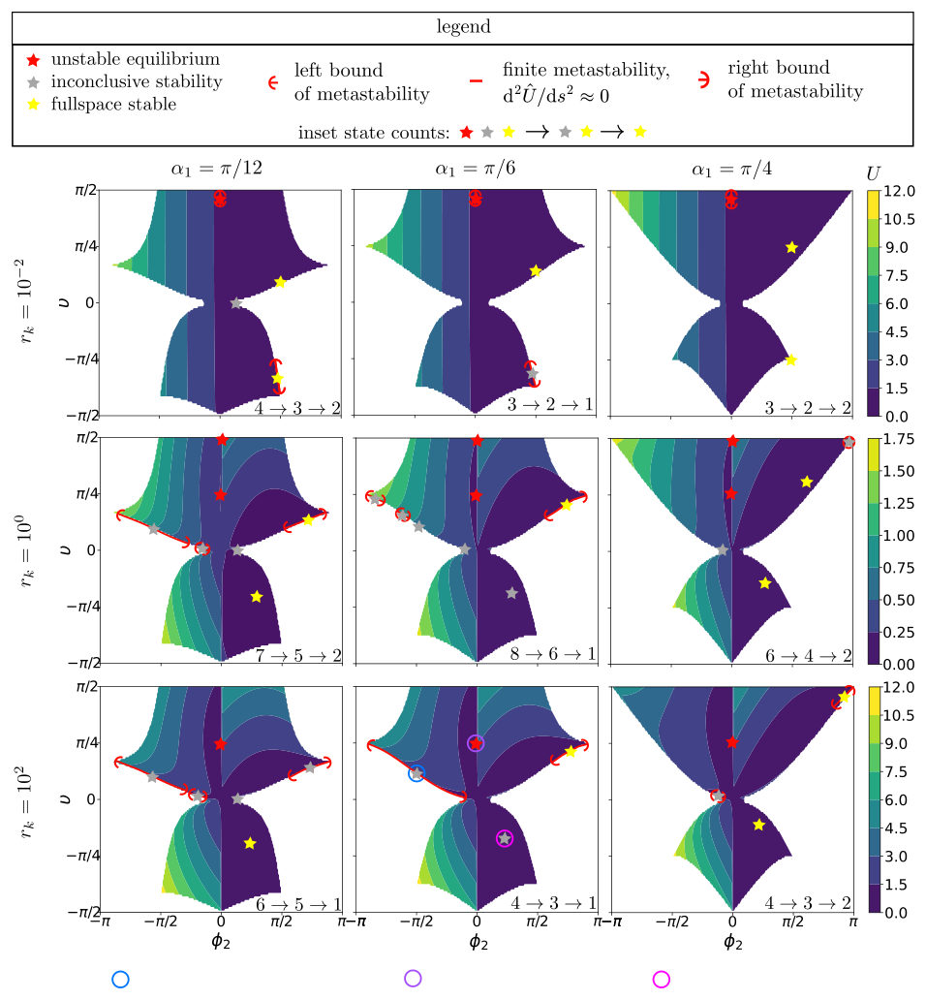
<figcaption class="paper-figure-caption"><b>Fig 1.</b> Figure 4. Multistability and metastability of degree-8 vertices. Energy landscapes for degree-8 vertices with D2 symmetry, with 1 = =12, =6, and =4 (columns), and rk = 102, 100, and 102 (rows). Stars denote local minima in the symmetry-constrained configuration space: gold stars are certified as full-space minima, red stars are unsta- ble to admissible symmetry-breaking perturbations, and gray stars remain inconclusive. White regions are excluded from the symmetry-reduced admissible domain, and red intervals mark metastable boundary segments. Insets report Nsym ! Nnr ! Nfull: the numbers of symmetry-constrained minima, candidates not ruled out, and certified full- space minima,...</figcaption>
</figure>
<figure class="paper-figure-card">
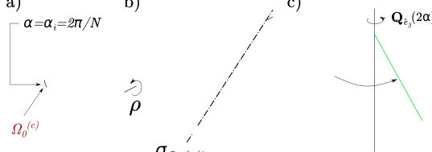
<figcaption class="paper-figure-caption"><b>Fig 2.</b> Figure 5. Single degree of freedom foldings of uniform degree N vertices. a) Uniform degree N vertex; unit cell (c) 0 to be folded and neighboring facet (together delimited by dashed lines) which is generated by reflecting about their shared crease; together these form a flap. b) (c) 0 is folded by elevating by angle then rotating by  about its left crease; then reflecting about its right crease to generate the folded state of the flap. c) A compatibly folded vertex is then generated by taking the orbit of the flap with hQ^e3 (2 )i. d) Final folded state. e) A folded state with broken symmetry can be specified by choosing 1; 3; : : : N1; again, flaps consisting of three creases are generated...</figcaption>
</figure>
</div>

<p><strong>Summary.</strong> This work develops a Lagrangian approach to simplify the study of origami multistability by exploiting inherent symmetries to reduce the dimensionality of the configuration space. By analyzing energy landscapes on these reduced slices, the authors systematically identify stable folded states and characterize metastable regions. This methodology has potential applications across mechanical metamaterials and robotics.</p>
<p><strong>Why it may be interesting.</strong> While not directly quantum, the mathematical techniques used—analyzing complex energy landscapes, stability analysis, and topological transitions in high-dimensional spaces—share conceptual parallels with analyzing phase diagrams or metastable states in complex quantum many-body systems.</p>
<details>
<summary>Detailed structure</summary>
<p><strong>Main problem.</strong> The paper addresses the complex challenge of analyzing the multistability of origami structures due to their highly nonlinear kinematics and high-dimensional configuration spaces.</p>
<p><strong>Main result.</strong> The Lagrangian framework successfully reduces the dimensionality of the configuration space, allowing for the systematic identification and characterization of stable and metastable folded states in origami vertices.</p>
<p><strong>Method.</strong> The authors employ the Lagrangian formalism to exploit symmetries, reducing the problem to lower-dimensional slices of the configuration space for stability analysis.</p>
<p><strong>Model / system.</strong> The physical system is origami, focusing on analyzing the kinematics and stability of vertices, specifically degree-6 and degree-8 vertices, and extending to cone-like vertices.</p>
<p><strong>Key observables.</strong> The number of stable symmetry-constrained minima (e.g., 18 of 41 for degree-6), topological transitions in kinematic space, and the existence of metastable regions.</p>
<p><strong>Important parameters / regimes.</strong> Crease stiffness ratios ($r_k$), sector angles ($\angle_1$), and the degree of the vertex (e.g., degree-6, degree-8).</p>
<p><strong>Assumptions / limitations.</strong> The analysis relies on symmetry-reduced parameterizations, and a key limitation noted is that self-contact is not imposed in the auxiliary stability calculations.</p>
<p><strong>Figures summary.</strong> Figures illustrate energy landscapes for varying angles and stiffness ratios, showing the classification of local minima (gold for strict minimum, red for unstable equilibrium, gray for inconclusive).</p>
<p><strong>Paper structure.</strong> The paper progresses by first establishing the Lagrangian framework to simplify the high-dimensional space, then analyzing specific vertex types (degree-6, degree-8) by varying geometric and stiffness parameters, and finally discussing implications for continuum limits and symmetry breaking.</p>
</details>
<details>
<summary>Abstract</summary>
<p>Studying the multistability of origami structures presents challenges due to the nonlinearity of their kinematics and the high-dimensional configuration spaces that are difficult to visualize and explore exhaustively. To address this, we utilize the Lagrangian framework for origami to exploit symmetries and obtain reduced-dimensional slices of the configuration space. Our analysis of degree-6 vertices with reflection symmetry reveals topological transitions in their kinematic space as sector angles are varied, with implications for the number of symmetry-constrained minima and the emergence of metastable regions. These lower-dimensional slices are amenable to exhaustive search and visualization. A subsequent full-space stability analysis shows that 18 of 41 degree-6 and 14 of 45 degree-8 symmetry-constrained minima remain minima when all locally compatible perturbations, including those that break symmetry, are admitted. The metastable regions, which would likely be overlooked by numerical optimization alone, are influenced by the interplay between the boundaries of admissible kinematic space and crease mechanical properties. We extend our analysis to cone-like vertices with higher symmetry and one-degree-of-freedom kinematics, exploring symmetry-breaking phenomena, combinatorial structure, and their consequences for branchwise stability. The stability landscapes uncovered have potential applications in mechanical metamaterials, mechanical computing, origami-based robotics, and structures designed to self-deploy and retain their shape.</p>
</details>
<p><sub><a href="#top">↑ back to top</a></sub></p>

<p><a id="paper-2609.14993"></a></p>
<h3 id="1d-interface-induced-real-space-berry-curvature-gradient-encoded-in-spinvalley-coupled-nonlinear-photocurrent-in-lateral-heterostructure"><a href="http://arxiv.org/abs/2609.14993v1">1D Interface-Induced Real-Space Berry Curvature Gradient Encoded in SpinValley-Coupled Nonlinear Photocurrent in Lateral Heterostructure</a></h3>
<p><strong>Authors:</strong> Suman Kumar Chakraborty, Jinu James, Biswajeet Nayak, David Tebbe, Purbasha Ray, Christoph Stampfer, Bernd Beschoten, Lutz Waldecker, Prasana Kumar Sahoo<br>
<strong>Type:</strong> experiment · <strong>Category:</strong> other · <strong>PDF:</strong> <a href="https://arxiv.org/pdf/2609.14993v1">https://arxiv.org/pdf/2609.14993v1</a><br>
<strong>Analysis basis:</strong> abstract only; PDF text extraction failed or PDF unavailable
<strong>Topic relevance:</strong> <code>Keldysh / 2PI / non-Gaussian methods</code> <strong>1/5</strong> · <code>analog quantum simulation</code> <strong>1/5</strong> · <code>correlated / nonlocal dissipation</code> <strong>1/5</strong> · <code>driven-dissipative phase transition</code> <strong>1/5</strong></p>
<p><strong>Summary.</strong> This work reports the observation of the intrinsic circular photogalvanic effect (CPGE) in a 2D lateral heterostructure (LHS) using nonlocal photocurrent measurements. The effect is attributed to a spin-valley-coupled mechanism driven by interface-induced Berry-curvature asymmetry. The findings establish LHS as a promising platform for advancing valleytronics and optospintronics.</p>
<p><strong>Why it may be interesting.</strong> The study uses optoelectronic measurements in 2D materials to probe fundamental quantum phenomena like Berry curvature and spin-valley coupling, which are highly relevant to understanding topological and spin-orbit coupling effects in quantum systems.</p>
<details>
<summary>Detailed structure</summary>
<p><strong>Main problem.</strong> The realization of the intrinsic circular photogalvanic effect (CPGE) under normal incidence in 2D materials, which is challenging to observe.</p>
<p><strong>Main result.</strong> The authors report a clear signature of CPGE in a 2D lateral heterostructure (LHS) by probing the nonlocal photocurrent across the 1D hetero-interface.</p>
<p><strong>Method.</strong> Nonlocal photocurrent measurements were performed across the 1D hetero-interface, with spatially and spectrally resolved measurements under selective excitation of constituent materials.</p>
<p><strong>Model / system.</strong> The system is a chemically vapor deposition-grown monolayer 2D lateral heterostructure (LHS) composed of TMDs like MoSe2 and WSe2. The physics is governed by spin-valley coupling and interface-induced Berry-curvature asymmetry.</p>
<p><strong>Key observables.</strong> Helicity-dependent photocurrent (CPGE-dominated mechanism), Circular Photocurrent (CPC) responses, and the magnitude/polarity of the CPG responses.</p>
<p><strong>Important parameters / regimes.</strong> 1D hetero-interface, MoSe2 and WSe2 excitation, normal incidence illumination.</p>
<p><strong>Assumptions / limitations.</strong> The observed photocurrent is dominated by a spin-valley-coupled CPGE mechanism driven by the interface-induced Berry-curvature dipole.</p>
<p><strong>Paper structure.</strong> The paper establishes the context by contrasting oblique illumination effects (CPC) with the difficulty of observing normal incidence effects (CPGE). It then presents the experimental observation of CPGE in LHS, followed by detailed analysis of spectral and spatial variations across the interface.</p>
</details>
<details>
<summary>Abstract</summary>
<p>Symmetry breaking enables helicity-dependent optoelectronic responses in quantum materials. In two-dimensional transition-metal dichalcogenides (TMDs), circular photocurrent (CPC) is typically observed under oblique illumination via the circular photon drag effect, while realization of the intrinsic circular photogalvanic effect (CPGE) under normal incidence remains challenging. Here, we report a clear signature of CPGE in chemical vapor deposition-grown monolayer 2D lateral heterostructure (LHS). By probing the nonlocal photocurrent across the 1D hetero-interface, we observe a helicity-dependent photocurrent consistent with a spin-valley-coupled CPGE-dominated mechanism driven by interface-induced Berry-curvature asymmetry, i.e., Berry curvature dipole. Spatially and spectrally resolved measurements under selective excitation of the MoSe2, WSe2, and the interface regions exhibit distinct magnitudes and polarities of the CPG responses. These contrasting behaviors highlight the opposite spin-valley dichroism for MoSe2 and WSe2, as well as enhanced valley mixing at the 1D interface. Our findings establish LHS as a robust platform for realizing a hetero-interface-induced CPGE-like response and highlight its potential for valleytronics and optospintronics.</p>
</details>
<p><sub><a href="#top">↑ back to top</a></sub></p>

<p><a id="paper-2609.15629"></a></p>
<h3 id="percolation-threshold-in-cluster-assembled-nanogranular-palladium-films-and-related-strategies-for-hydrogen-detection"><a href="http://arxiv.org/abs/2609.15629v1">Percolation threshold in cluster-assembled nanogranular palladium films and related strategies for hydrogen detection</a></h3>
<p><strong>Authors:</strong> A. Debot, D. Balakrishnan, A. M. Philippe, E. Barborini<br>
<strong>Type:</strong> experiment · <strong>Category:</strong> other · <strong>PDF:</strong> <a href="https://arxiv.org/pdf/2609.15629v1">https://arxiv.org/pdf/2609.15629v1</a><br>
<strong>Analysis basis:</strong> full PDF text, analyzed in chunks
<strong>Topic relevance:</strong> <code>analog quantum simulation</code> <strong>1/5</strong> · <code>driven-dissipative phase transition</code> <strong>1/5</strong> · <code>non-equilibrium universality</code> <strong>1/5</strong> · <code>quantum measurements</code> <strong>1/5</strong></p>
<div class="figure-strip-hint">↔ Scroll figures horizontally</div>
<div class="paper-figures-scroll">
<figure class="paper-figure-card">
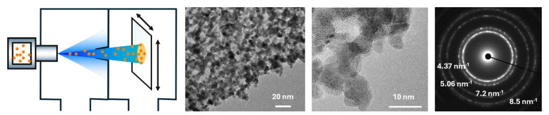
<figcaption class="paper-figure-caption"><b>Fig 1.</b> Figure 1. a) Scheme of Supersonic Cluster Beam Deposition system, where arrows indicate substrate movements implementing rastering protocols. b-c) TEM images of cluster-assembled Pd nanogranular film. d) Electron diffraction pattern of the same, matching cubic metallic Pd.</figcaption>
</figure>
<figure class="paper-figure-card">

<figcaption class="paper-figure-caption"><b>Fig 2.</b> Fig. 1b-c-d shows Transmission Electron Microscopy (TEM) images and Selected Area Electron Diffraction (SAED) pattern of the films under investigation. TEM images highlight the nanogranular structure of the films, resulting from the soft assembling of Pd nanoparticles with dimensions &lt;5 nm, while SAED pattern stems from the (111), (200), (220), and (311) planes of face-centered cubic metallic palladium, matching the reference ICDD Powder Diffraction File (Card No. 00-005-0681)[16], as reported in the Table below. The relationship between d and the miller indices is 𝑑𝑑= 𝑎𝑎</figcaption>
</figure>
<figure class="paper-figure-card">

<figcaption class="paper-figure-caption"><b>Fig 3.</b> Figure 2. In-situ current-thickness correlation during nanogranular Pd film growth. The percolation phenomenon occurs between 1.5 and 2.5 nm, as clearly visible in semi-log inset graph zooming on 1-4 nm thickness range. Images from left to right schematically depict the three main coverage-conduction stages: no conduction, percolation, conduction through the 3D cluster-assembled structure.</figcaption>
</figure>
<figure class="paper-figure-card">

<figcaption class="paper-figure-caption"><b>Fig 4.</b> Figure 3. a) Hydrogen detection by the three nanogranular Pd structures described in the text: percolating one (top); 3D metallic network (middle); polymer-nanoparticles composite layer (bottom). The electrical current through the</figcaption>
</figure>
</div>

<p><strong>Summary.</strong> This work investigates using nanogranular palladium films and polymer composites as novel sensors for hydrogen gas. By measuring electrical transport changes during and after exposure to hydrogen, the authors characterize mechanisms like cluster coalescence and polymer swelling. The results propose new, miniaturized transduction routes for gas detection.</p>
<p><strong>Why it may be interesting.</strong> While focused on materials science, the study involves analyzing transport phenomena (tunneling, percolation) under external stimuli ($  ext{H}_2$ gas), which touches upon open quantum systems concepts related to environmental coupling and conductance modulation.</p>
<details>
<summary>Detailed structure</summary>
<p><strong>Main problem.</strong> The primary goal is to develop miniaturized, fast, and selective sensors for hydrogen gas using the electrical transport properties of nanogranular palladium films.</p>
<p><strong>Main result.</strong> The study demonstrates that hydrogen exposure causes measurable changes in electrical conduction, which can be exploited for sensing, with mechanisms involving cluster coalescence and polymer swelling.</p>
<p><strong>Method.</strong> The research employs in-situ and ex-situ electrical transport measurements on films deposited via Supersonic Cluster Beam Deposition, comparing behavior in air versus hydrogen gas.</p>
<p><strong>Model / system.</strong> The physical system involves cluster-assembled nanogranular palladium films and palladium clusters embedded in soft polymers (SEBS). Electrical transport is analyzed across different regimes, including the percolation threshold and 3D metallic networks.</p>
<p><strong>Key observables.</strong> Electrical current (conduction change), response time (T50%), and the nature of conduction change (reversible vs. irreversible).</p>
<p><strong>Important parameters / regimes.</strong> Film thickness (e.g., 1.5 nm to 5 nm), hydrogen concentration (0.25% in air), and temperature/time scales.</p>
<p><strong>Assumptions / limitations.</strong> The irreversible decrease in conduction is tentatively attributed to hydrogen-promoted partial coalescence of Pd clusters, while polymer swelling suggests an alternative sensing mechanism.</p>
<p><strong>Figures summary.</strong> Figures illustrate the SCBD setup, TEM confirming nanogranular structure, in-situ current-thickness correlation showing percolation, and current vs. time plots showing $  ext{H}_2$ response for different film types.</p>
<p><strong>Paper structure.</strong> The paper follows a structure of introducing the problem (hydrogen sensing), detailing the experimental setup and materials (SCBD, Pd films, polymers), presenting results on percolation and $    ext{H}_2$ interaction, and concluding with novel sensing routes.</p>
</details>
<details>
<summary>Abstract</summary>
<p>Electrical transport in cluster-assembled nanogranular palladium films was investigated in-situ during growth by Supersonic Cluster Beam Deposition. The percolation onset is observed at a thickness of 1.5 nm, while the percolation completion at 2.5 nm. Films at the percolation thickness (2 nm) and beyond the percolation end (5 nm) were subsequently exposed ex-situ to 0.25% hydrogen in air to investigate how hydrogen-induced structural changes in Pd clusters modulate electrical transport and can be exploited as mechanism for selective hydrogen detection. Implantation of palladium clusters in soft polymer styrene-ethylene-butylene-styrene was also explored to promote clusters separation and enhance quantum tunnelling phenomena within electrical transport. The observed electrical transport pattern features stable baselines in air, suggesting material stability, fast response time (T50% &lt; 10 s), and the coexistence of reversible and irreversible components in conduction changes induced by hydrogen exposure. The irreversible component is tentatively attributed to hydrogen-promoted partial coalescence of Pd clusters. The behaviour of the polymer implanted samples suggests an alternative gas detection mechanism where hydrogen-induced polymer swelling dominates over palladium structural modifications. These results disclose novel possible transducing routes for miniaturized hydrogen detection and multimodal sensing.</p>
</details>
<p><sub><a href="#top">↑ back to top</a></sub></p>

<p><a id="paper-2609.14731"></a></p>
<h3 id="colossal-magnetostriction-effect-in-rare-earth-orthoferrites"><a href="http://arxiv.org/abs/2609.14731v1">Colossal magnetostriction effect in rare-earth orthoferrites</a></h3>
<p><strong>Authors:</strong> Moumita Das, Arup Ghosh, Moumita Nandi, Arumugam Thamizhavel, Dipten Bhattacharya, Prabhat Mandal<br>
<strong>Type:</strong> experiment · <strong>Category:</strong> statistical mechanics · <strong>PDF:</strong> <a href="https://arxiv.org/pdf/2609.14731v1">https://arxiv.org/pdf/2609.14731v1</a><br>
<strong>Analysis basis:</strong> full PDF text, analyzed in chunks
<strong>Topic relevance:</strong> <code>analog quantum simulation</code> <strong>1/5</strong> · <code>quantum measurements</code> <strong>1/5</strong></p>
<div class="figure-strip-hint">↔ Scroll figures horizontally</div>
<div class="paper-figures-scroll">
<figure class="paper-figure-card">

<figcaption class="paper-figure-caption"><b>Fig 1.</b> FIG. 1. (a) The main panel shows the magnetization (M) versus temperature (T) plot recorded by applying the field along c-axis and measuring the c-axis magnetization of HoFeO3 crystal; the data obtained during the field-cooling-and-warming cycle of measurement (where ∼100 Oe was applied at room temperature while ramping down the temperature to ∼2.0 K followed by warming back to room temperature under field) are shown; the data clearly show the spin-reorientation transition of Fe at TSR ≈55 K; lower inset shows how the TSR varies with field across the range 0.1-10 kOe; TSR decreases rapidly with increasing field; the upper inset shows the antiferromagnetic ordering of Ho3+ spins near 4 K in...</figcaption>
</figure>
<figure class="paper-figure-card">

<figcaption class="paper-figure-caption"><b>Fig 2.</b> Figure 2 shows H dependence of dielectric constant (ϵ) along the c axis at and below 90 K. Similar to s, ϵ ex- hibits a huge change with field and also the characteristic features of the metamagnetic transitions and hysteresis. Away from the transition, s appears to follow M 2 behavior. Notably, the magnitude of s and the nature of the s −H loop of c axis are different from that along a and b axes and so are the H dependence of M and ϵ (see Supplemen-</figcaption>
</figure>
<figure class="paper-figure-card">

<figcaption class="paper-figure-caption"><b>Fig 3.</b> FIG. 2. The c-axis striction (s), magnetization (M), and dielectric constant (ϵ) versus magnetic field patterns at different temperatures for HoFeO3 are shown in this series of stack plots; importantly, the dielectric constant (ϵ) exhibits significant magnetic field dependence at the selected temperatures and also step-like anomalous jumps at corresponding characteristic fields HC where the striction (s) exhibits similar features; ϵ drops by more than 65% at 90 kOe field and 35 K; these results reveal a pronounced magnetodielectric response that is strongly correlated with the field-induced magnetostructural transitions; however, characteristic features in the magnetization versus field...</figcaption>
</figure>
<figure class="paper-figure-card">

<figcaption class="paper-figure-caption"><b>Fig 4.</b> FIG. 3. (a) The main panel shows the c-axis magnetization (M) versus temperature (T) plot under 100 Oe magnetic field for DyFeO3; the data were recorded during field-cooling-and-warming cycle where following field cooling from room temperature down to ∼2 K the temperature of the sample was ramped back under 100 Oe field to room temperature; the magnetization was recorded during the heating; the Fe spin-reorientation transition could be observed at TSr ≈50 K; at even lower temperature near 4.2 K, antiferromagnetic ordering of Dy 3+ spins set in (T Dy N ); inset shows the M −T plots under different magnetic field 0.1-10 kOe; (b) the main panel shows the magnetic hysteresis loops at high...</figcaption>
</figure>
<figure class="paper-figure-card">

<figcaption class="paper-figure-caption"><b>Fig 5.</b> FIG. 4. Low-temperature metamagnetic transitions in DyFeO3. The main panel shows the c-axis magnetic hysteresis loop at ∼3 K. Several anomalies corresponding to characteristic fields, HC, are resolved in the M −H loop. A clear hysteretic anomaly is observed at one of the fields, whereas no resolvable hysteresis is observed at the remaining anomalies within the experimental resolution. The upper and lower insets show representative M −H hysteresis loops above and below TSR, respectively.</figcaption>
</figure>
</div>

<p><strong>Summary.</strong> This work reports the observation of colossal, highly anisotropic magnetostriction in rare-earth orthoferrites ($  ext{RFeO}_3$). The massive lattice strain, exceeding 100% along the c-axis, is directly linked to a magnetic-field-induced first-order structural phase transition occurring below the spin-reorientation temperature. These findings suggest that $    ext{RFeO}_3$ materials are excellent candidates for applications requiring large, reversible strain control via magnetic fields.</p>
<p><strong>Why it may be interesting.</strong> While primarily experimental, the study of field-induced structural transitions and the coupling between magnetic order and lattice strain touches upon concepts relevant to coupled order parameters and phase transitions studied in many-body physics.</p>
<details>
<summary>Detailed structure</summary>
<p><strong>Main problem.</strong> The study investigates the colossal magnetostriction effect and associated magnetic-field-induced structural phase transitions in rare-earth orthoferrites.</p>
<p><strong>Main result.</strong> The single crystals exhibit unprecedentedly large, highly anisotropic magnetostriction (up to 100% along the c-axis) correlated with field-induced first-order structural transitions below the spin-reorientation temperature.</p>
<p><strong>Method.</strong> Measurements involved using a capacitive dilatometer to measure lattice strain ($\Delta l/l$) and magnetometers to measure magnetization ($M$) under varying magnetic fields and temperatures.</p>
<p><strong>Model / system.</strong> The physical system is single crystals of orthorhombic rare-earth orthoferrites, $  ext{RFeO}<em SR>3$ ($ ext{R} =    ext{Dy},    ext{Ho}$), which are studied below their spin-reorientation transition temperature ($T</em>$).</p>
<p><strong>Key observables.</strong> Magnetostriction ($s$), magnetodielectric effect ($\epsilon$), lattice strain ($\Delta l/l$), and magnetization ($M$) as functions of magnetic field ($H$) and temperature ($T$).</p>
<p><strong>Important parameters / regimes.</strong> Magnetic fields up to 90 kOe; temperatures near the spin-reorientation transition ($T_{SR} \approx 50-55 	ext{ K}$).</p>
<p><strong>Assumptions / limitations.</strong> The colossal effects are attributed to a magnetic-field-induced first-order structural phase transition, possibly driven by large spin-orbit coupling and magnetocrystalline anisotropy.</p>
<p><strong>Figures summary.</strong> Figures illustrate $M$ vs $T$ and $M$ vs $H$ loops, showing sharp transitions; $\Delta l/l$ vs $T$ curves demonstrating step-like changes in strain; and $s$ vs $H$ loops confirming large, hysteretic magnetostriction along the c-axis.</p>
<p><strong>Paper structure.</strong> The paper systematically presents measurements of magnetization, thermal expansion, and magnetostriction for $ ext{HoFeO}_3$ and $ ext{DyFeO}_3$, correlating the observed colossal strain and dielectric anomalies with magnetic phase transitions.</p>
</details>
<details>
<summary>Abstract</summary>
<p>Within the entire gamut of magnetostrictive, piezomagnetic, and ferromagnetic shape memory alloy systems, the striction effect is found to vary from a few tens of parts per million to a few percent. Here, we report the observation of an unprecedentedly large magnetic-field-induced lattice strain along the $c$ axis (more than 60-100% at 90 kOe field) in single crystals of orthorhombic $R$FeO$_3$ ($R$ = Dy, Ho) below their spin-reorientation transition temperature $T_{SR}$. However, the striction effect is two orders of magnitude smaller along the $a$ and $b$ axes. Like magnetostriction, the magnetodielectric effect is highly anisotropic and very large along the $c$ axis. Such gigantic striction and dielectric effects along the $c$ axis arise as a result of a magnetic-field-induced first-order structural phase transition which possibly stems from large spin-orbit coupling (and, thereby, enormous magnetocrystalline anisotropy). The observed colossal striction in rare-earth orthoferrites could open new opportunities for applications requiring large, reversible magnetic-field-induced strain.</p>
</details>
<p><sub><a href="#top">↑ back to top</a></sub></p>

<p><a id="paper-2609.15778"></a></p>
<h3 id="induced-superconductivity-in-selective-area-grown-snte-devices"><a href="http://arxiv.org/abs/2609.15778v1">Induced superconductivity in selective-area grown SnTe devices</a></h3>
<p><strong>Authors:</strong> Maarten J. G. Kamphuis, Yoran F. S. Starmans, Pim J. H. Lueb, Femke J. Witmans, Marvin M. Jansen-Zilles, Marcel A. Verheijen, Reinoud Lavrijsen, Joost Ridderbos, Fabrizio Nichele, Floris A. Zwanenburg, Erik P. A. M. Bakkers, Alexander Brinkman<br>
<strong>Type:</strong> experiment · <strong>Category:</strong> other · <strong>PDF:</strong> <a href="https://arxiv.org/pdf/2609.15778v1">https://arxiv.org/pdf/2609.15778v1</a><br>
<strong>Analysis basis:</strong> full PDF text, analyzed in chunks
<strong>Topic relevance:</strong> <code>QC/QI experiment</code> <strong>1/5</strong> · <code>analog quantum simulation</code> <strong>1/5</strong></p>
<div class="figure-strip-hint">↔ Scroll figures horizontally</div>
<div class="paper-figures-scroll">
<figure class="paper-figure-card">

<figcaption class="paper-figure-caption"><b>Fig 1.</b> Figure 1: Superconductivity in SAG SnTe nanowire devices. False-colored top- view SEM images of SAG SnTe Hall bar (a) and loop (b) devices. The SnTe nanowires are colored in dark blue, the metal contacts in light blue. Also indicated schematically is the (quasi-)4-point wiring configuration for low-temperature electronic transport measure- ments. (c) Typical example of the measured differential resistance dV/dI as a function of the normalized applied current Is/Ic for both device types. A re-entrant resistance, indicative of type-II superconductivity, is observed consis- tently for all devices before the transition to the normal state.</figcaption>
</figure>
<figure class="paper-figure-card">

<figcaption class="paper-figure-caption"><b>Fig 2.</b> Figure 2: Cross-sectional HAADF-STEM and EDX measurements on both device types. (a,e) HAADF-STEM cross section for the Hall-bar and AB-loop devices respectively. (b,f) Atomic resolution HAADF-STEM micrographs of the InP-SnTe interface. (c,g) EDX com- positional mappings showing the elemental distributions of In (green), Sn (red) and Al (blue). No significant intermixing of the InP and SnTe constituents can be observed. (d,h) Line profiles extracted from the white boxed area in Figures (c,g). No evidence for indium diffusion can be discerned.</figcaption>
</figure>
<figure class="paper-figure-card">

<figcaption class="paper-figure-caption"><b>Fig 3.</b> Figure 3: Vortex flow channels. (a) Four-terminal longitudinal differential resis- tance dV/dI against dc-current Idc for Hall- bar device 2. Measurement taken at base- temperature (8 mK) without magnetic field. The red and blue traces correspond to posi- tive and negative sweep directions respectively. (b) The plateau resistance values in between the observed resonances of Figure a (black) and the positions of the plateaus (red). The dashed lines represent linear fittings. (c) Two- dimensional mapping of the resistance in (a) against out-of-plane magnetic field Bz. Mea- surement taken at T=50 mK.</figcaption>
</figure>
<figure class="paper-figure-card">

<figcaption class="paper-figure-caption"><b>Fig 4.</b> Figure 4: Little-Parks oscillations in SnTe nanowire loops. (a-c) SEM images of three measured devices, representative of the three investigated loop sizes. (d-e) The corresponding measured differential resistance dV/dI in color scale versus magnetic field B⊥and IS. The oscil- lation frequency increases with the loop area. (g-i) Isolated oscillations in critical current against the applied magnetic field, with a subtracted background. (j) Measured oscillation frequencies versus measured effective loop area for all 8 measured devices. The dashed line has a slope of h/e (normal flux quantum) while the solid line has a slope of h/2e (superconducting flux quantum). The data matching h/2e thus...</figcaption>
</figure>
<figure class="paper-figure-card">

<figcaption class="paper-figure-caption"><b>Fig 5.</b> Figure 5: Two-terminal IV curve through one of the contacts on a loop device. (a) SEM image of the relevant part of the device, with the measurement setup indicated schematically. (b) Plot of the measured IV curve. The linear (ohmic) curve does not exhibit a plateau for low currents, indicating that the titanium/palladium metal stack used for the contacts is not intrinsically superconductive.</figcaption>
</figure>
</div>

<p><strong>Summary.</strong> This paper experimentally investigates induced superconductivity in SnTe nanowires grown on InP. The authors argue that the superconductivity originates from an indium-doped interface layer ($\text{In}_x\text{Sn}_{1-x}\text{Te}$) formed by substrate diffusion. They use transport measurements, including Little-Parks oscillations, to confirm the superconducting nature and rule out other potential sources.</p>
<p><strong>Why it may be interesting.</strong> The work provides experimental evidence on engineering superconductivity in topological materials using proximity effects, which is highly relevant for realizing superconducting quantum circuits.</p>
<details>
<summary>Detailed structure</summary>
<p><strong>Main problem.</strong> The study investigates the origin of induced superconductivity in selectively area grown SnTe nanowires, aiming to determine if the superconductivity is topological or arises from interfacial doping.</p>
<p><strong>Main result.</strong> The superconducting behavior is attributed to the formation of an intrinsically superconducting $\text{In}_x\text{Sn}_{1-x}\text{Te}$ layer due to indium diffusion from the InP substrate, confirming type-II superconductivity.</p>
<p><strong>Method.</strong> The research employed low-temperature electronic transport measurements, including differential resistance ($dV/dI$) and Little-Parks oscillation measurements in superconducting loops.</p>
<p><strong>Model / system.</strong> The physical system is a topological crystalline insulator (TCI) SnTe nanowire grown on an InP substrate. The analysis models the superconducting state using concepts like vortex flow and flux quantization ($\Phi_0 = h/2e$).</p>
<p><strong>Key observables.</strong> Zero differential resistance, Little-Parks oscillations in critical current ($I_c$), and characteristic resonances in $dV/dI$ vs. current.</p>
<p><strong>Important parameters / regimes.</strong> Critical temperature ($T_c \approx 350 \text{ mK}$), carrier densities ($\approx 2 \cdot 10^{20} \text{ cm}^{-3}$), and superconducting flux quantum ($\Phi_0 = h/2e$).</p>
<p><strong>Assumptions / limitations.</strong> The primary assumption is that In diffusion forms the superconducting layer, although EDX evidence for this is limited, and the analysis notes that observed features suggest trivial bulk transport dominates over topological signatures.</p>
<p><strong>Figures summary.</strong> Figures show SEM images of devices, $dV/dI$ curves confirming type-II superconductivity, and $I_c$ vs. $B$ plots demonstrating Little-Parks oscillations consistent with flux quantization.</p>
<p><strong>Paper structure.</strong> The paper systematically rules out alternative sources of superconductivity (contacts, vacancies) using transport measurements (Shapiro steps, Ohmic IV curves) before confirming the superconducting nature via Little-Parks oscillations and proposing the In-diffusion mechanism as the source.</p>
</details>
<details>
<summary>Abstract</summary>
<p>Topological superconductors are of high interest for applications in topological quantum computation. The required topologically superconducting state can be engineered by proximityinducing superconductivity in a topological insulator. Here, we explore the induced superconductivity in selective-area grown nanowires of the topological crystalline insulator SnTe on a InP substrate, through TEM/EDX and low-temperature electronic transport studies. The observed superconducting behavior likely originates from indium in the substrate diffusing upwards into the SnTe nanowire, forming a thin layer of InxSn1-xTe at the interface between the nanowire and the substrate. InxSn1-xTe is intrinsically superconducting for indium concentrations above 2%, resulting in superconductivity within the heterostructure. Little-Parks oscillations are observed in loop-shaped nanowire networks in an out-of-plane magnetic field. The half-period shift indicative of a topological superconducting state is absent, which is explained by dominant trivial transport channels obscuring any topological signatures.</p>
</details>
<p><sub><a href="#top">↑ back to top</a></sub></p>

<p><a id="paper-2609.15460"></a></p>
<h3 id="optical-activation-of-nonlinear-hall-effect-in-topological-insulators-with-warped-fermi-surface"><a href="http://arxiv.org/abs/2609.15460v1">Optical activation of nonlinear Hall effect in topological insulators with warped Fermi surface</a></h3>
<p><strong>Authors:</strong> Mohammad Shafiei, Farhad Fazileh, Milorad V. Milošević<br>
<strong>Type:</strong> theory · <strong>Category:</strong> other · <strong>PDF:</strong> <a href="https://arxiv.org/pdf/2609.15460v1">https://arxiv.org/pdf/2609.15460v1</a><br>
<strong>Analysis basis:</strong> full PDF text, analyzed in chunks
<strong>Topic relevance:</strong> <code>Keldysh / 2PI / non-Gaussian methods</code> <strong>1/5</strong> · <code>methods for driven-dissipative</code> <strong>1/5</strong></p>
<div class="figure-strip-hint">↔ Scroll figures horizontally</div>
<div class="paper-figures-scroll">
<figure class="paper-figure-card">

<figcaption class="paper-figure-caption"><b>Fig 1.</b> FIG. 1. Evolution of the conduction band dispersion with warping and illumination. (a) Isotropic Dirac cone for λh = 0. (b) Hexagonally warped Fermi surface in absence of illumina- tion, retaining C3v symmetry. (c),(d) Photon dressed con- tours for A0 = 1.0 nm−1 and polarization angles θ = 0 and π/6, respectively. The optical field removes the threefold equivalence of the warped lobes and selects a polarization dependent anisotropy axis.</figcaption>
</figure>
<figure class="paper-figure-card">

<figcaption class="paper-figure-caption"><b>Fig 2.</b> FIG. 2. Conduction band Berry curvature. (a) The unwarped cone carries no warping-induced curvature. (b) Hexagonal warping produces a pronounced but C3v-symmetric six-lobe texture. (c),(d) LPL redistributes the curvature through the dressed band denominator, making symmetry-related lobes contribute unequally to the first moment in Eq. (10).</figcaption>
</figure>
<figure class="paper-figure-card">

<figcaption class="paper-figure-caption"><b>Fig 3.</b> FIG. 3. Activation of the Berry curvature dipole. (a) BCDx versus warping strength. The equilibrium response vanishes for all λh, whereas LPL produces a finite dipole that disap- pears in the unwarped limit. (b) BCDx in the (λh, EF ) plane for A0 = 1.0 nm−1 and θ = 0, showing the combined depen- dence on curvature strength and Fermi surface geometry.</figcaption>
</figure>
<figure class="paper-figure-card">

<figcaption class="paper-figure-caption"><b>Fig 4.</b> FIG. 4. Optical control of the BCD for Bi2Te3 at EF = 0.15 eV. (a) BCDx versus A0 at θ = 0, displaying the expected quadratic onset. (b) BCDx and BCDy versus polarization angle at A0 = 1.0 nm−1. The transverse component BCDy vanishes at mirror symmetric orientations. (c) Joint (θ, A0) map of BCDx, demonstrating continuous amplitude control and polarization-driven sign reversal.</figcaption>
</figure>
</div>

<p><strong>Summary.</strong> This theoretical work shows that while topological insulators with warped Fermi surfaces possess the ingredients for a nonlinear Hall effect, residual symmetries forbid it at equilibrium. By applying linearly polarized light in the off-resonant Floquet regime, the authors successfully break this symmetry, generating a controllable Berry curvature dipole. This provides a practical, light-induced mechanism to activate symmetry-forbidden quantum transport.</p>
<p><strong>Why it may be interesting.</strong> This work demonstrates a precise method of 'Floquet symmetry engineering' to activate a transport phenomenon (NHE) that is otherwise forbidden by fundamental symmetries, which is a key concept in open quantum systems and light-matter interaction.</p>
<details>
<summary>Detailed structure</summary>
<p><strong>Main problem.</strong> The nonlinear Hall effect (NHE) in topological insulators (TIs) with warped Fermi surfaces is intrinsically symmetry-forbidden in equilibrium.</p>
<p><strong>Main result.</strong> Linearly polarized light can break the necessary rotational symmetry, generating a finite, tunable Berry curvature dipole (BCD) that activates the NHE without breaking time-reversal symmetry.</p>
<p><strong>Method.</strong> The authors used Floquet theory to model the interaction with light and calculated the BCD, which governs the NHE, by analyzing symmetry constraints.</p>
<p><strong>Model / system.</strong> The system is a topological insulator (like Bi2Te3) with a hexagonally warped Fermi surface, modeled by a warped Dirac Hamiltonian. The optical activation is introduced via a time-dependent perturbation from linearly polarized light.</p>
<p><strong>Key observables.</strong> The Berry curvature dipole (BCD), which dictates the nonlinear Hall current density (J_y proportional to BCD_x E_x^2).</p>
<p><strong>Important parameters / regimes.</strong> Light intensity ($A_0$), light polarization angle ($ heta$), and the warping strength ($\lambda_h$).</p>
<p><strong>Assumptions / limitations.</strong> The analysis is performed in the off-resonant Floquet regime and relies on the relaxation time approximation.</p>
<p><strong>Figures summary.</strong> Figures illustrate the evolution of conduction band contours, the Berry curvature under light, and quantitatively show how the BCD becomes non-zero and tunable by light polarization and intensity.</p>
<p><strong>Paper structure.</strong> The paper first establishes that equilibrium warping leads to zero BCD due to threefold rotational symmetry. It then introduces LPL to break this symmetry, deriving an effective Hamiltonian and calculating the resulting finite, controllable BCD, culminating in quantitative predictions for measurable currents.</p>
</details>
<details>
<summary>Abstract</summary>
<p>Topological insulators (TIs) with hexagonally warped Fermi surface are natural platforms for the nonlinear Hall effect, as warping breaks inversion symmetry while preserving time-reversal symmetry (TRS). Here we show that this inversion breaking alone is insufficient: although warping generates a strongly anisotropic Berry curvature, the preserved threefold rotational symmetry forces the equilibrium Berry curvature dipole (BCD) to vanish identically. We demonstrate that linearly polarized light removes this symmetry obstruction: in the off-resonant Floquet regime, it lowers the rotational symmetry while preserving TRS, thereby generating a finite BCD whose magnitude, orientation, and sign are continuously tunable by the light intensity and polarization. For realistic Bi$_2$Te$_3$ parameters, we show that the induced BCD reaches $\sim$0.03~nm, yielding microampere-scale nonlinear Hall currents under experimentally accessible conditions. Our results therefore establish Floquet symmetry engineering as a route to activating the symmetry-forbidden nonlinear transport on TI surfaces without breaking the TRS.</p>
</details>
<p><sub><a href="#top">↑ back to top</a></sub></p>

<p><a id="paper-2609.13951"></a></p>
<h3 id="vortex-solitons-in-star-networks"><a href="http://arxiv.org/abs/2609.13951v1">Vortex solitons in star networks</a></h3>
<p><strong>Authors:</strong> Yaroslav V. Kartashov<br>
<strong>Type:</strong> theory · <strong>Category:</strong> other · <strong>PDF:</strong> <a href="https://arxiv.org/pdf/2609.13951v1">https://arxiv.org/pdf/2609.13951v1</a><br>
<strong>Analysis basis:</strong> full PDF text, analyzed in chunks
<strong>Topic relevance:</strong> <code>analog quantum simulation</code> <strong>1/5</strong> · <code>interference shaping light</code> <strong>1/5</strong></p>
<div class="figure-strip-hint">↔ Scroll figures horizontally</div>
<div class="paper-figures-scroll">
<figure class="paper-figure-card">

<figcaption class="paper-figure-caption"><b>Fig 1.</b> Fig. 1. Examples of the refractive index distributions ( , ) x y  in (a) 3  and (b) 7  star networks for different values of shift parameter  indicated in each panel. At 0  first waveguides in each ray are located on yellow circle; red and cyan circles show locations of such wave- guides at 0  and 0  , respectively. (c) Eigenvalues of all linear modes supported by various k  star networks vs shift parameter . Color coding indicates form-factors  of linear modes, from low (green color, delocalized modes) to high (red color, localized modes) ones. Red labels near each curve detaching from bulk band indicate topological charges of localized vortices that can be constructed using...</figcaption>
</figure>
<figure class="paper-figure-card">

<figcaption class="paper-figure-caption"><b>Fig 2.</b> Fig. 2. Examples of field modulus and phase (insets) distributions in linear modes with different topological charges m supported by star net- works 3  (a), 4  (b), and 7  (c),(d) at different values of shift parameter  indicated in each panel. Gray and red circles indicate waveguide positions. Field modulus distributions are shown within , [ 20, 20] x y   window, while phase distributions in the insets are shown within , [ 8, 8] x y   window.</figcaption>
</figure>
<figure class="paper-figure-card">

<figcaption class="paper-figure-caption"><b>Fig 3.</b> Fig. 3. ( ) U b dependencies illustrating soliton families with different topological charges m in star networks and corresponding field modulus and phase (insets) distributions for networks 3  (a),(b), 4  (c),(d), 5  (e),(f), 6  (g),(h), and 7  (i),(j). Gray areas show band of extended linear modes. Soliton profiles shown at the right corresponding to the orange dots in ( ) U b dependencies, their propagation constants are indi- cated on each profile. Field modulus distributions are shown within , [ 20, 20] x y   window, while phase distributions in the insets are shown within , [ 8, 8] x y   window. Black branches correspond to stable solitons, while red branches are unstable....</figcaption>
</figure>
<figure class="paper-figure-card">

<figcaption class="paper-figure-caption"><b>Fig 4.</b> Fig. 4. Example of instability development of vortex soliton with 1.20 b  , 1 m  in 5  network (a), stable propagation of soliton with 0.64 b  , 2 m  in 5  network (b), instability of soliton with 0.65 b  , 2 m  in 7  network (c), and stable dynamics of 0.64 b  , 3 m  state in 7  network (d). Field modulus and phase (insets) distributions at different distances correspond to the orange dots in peak amplitude max  vs z dependencies. Field modulus distributions are shown within , [ 12, 12] x y   window, while phase distributions in the insets are shown within , [ 8, 8] x y   window. In all cases 0.7  .</figcaption>
</figure>
</div>

<p><strong>Summary.</strong> This work analyzes vortex solitons in complex star network waveguide arrays, demonstrating that the system's discrete rotational symmetry dictates the possible topological charges. The stability and existence of these solitons are critically dependent on how their associated linear modes interact with the extended state band of the structure. This reveals complex, symmetry-protected behavior distinct from simpler ring geometries.</p>
<p><strong>Why it may be interesting.</strong> The study of topological defects (vortices) in structured nonlinear media, especially where the underlying linear spectrum has band gaps, is highly relevant to quantum optics and nonlinear wave physics, providing insights into robust information carriers.</p>
<details>
<summary>Detailed structure</summary>
<p><strong>Main problem.</strong> The paper investigates the existence, properties, and stability of vortex solitons within two-dimensional star networks formed by coupled line waveguide arrays.</p>
<p><strong>Main result.</strong> The star networks support rich families of vortex solitons whose stability and behavior are highly dependent on the system's discrete rotational symmetry and whether the linear mode lies above or below the extended state band.</p>
<p><strong>Method.</strong> The analysis involves solving the nonlinear Schrödinger equation (NSE) by first finding localized linear eigenmodes and then analyzing the stability of the resulting soliton solutions via direct evolution of perturbed fields.</p>
<p><strong>Model / system.</strong> The system is modeled as a star network of coupled one-dimensional line waveguides, governed by a nonlinear wave equation. The structure's symmetry is controlled by the number of rays (N) and the central ring radius, tuned by a shift parameter (delta).</p>
<p><strong>Key observables.</strong> Topological charge (m), soliton power (U), propagation constant (b), and stability (stable/unstable branches).</p>
<p><strong>Important parameters / regimes.</strong> Number of rays (N), central ring radius (controlled by delta), and the relative position of the linear mode's propagation constant with respect to the extended state band.</p>
<p><strong>Assumptions / limitations.</strong> The waveguides are assumed to be Gaussian, and the analysis focuses on the case of a focusing nonlinear medium.</p>
<p><strong>Figures summary.</strong> Figures illustrate the refractive index profiles for different N and delta, show linear mode eigenvalues vs. delta, and map out the stability boundaries (U-b diagrams) for various vortex soliton families.</p>
<p><strong>Paper structure.</strong> The paper progresses from defining the physical system and linear modes to deriving the soliton solutions, and finally dedicating significant analysis to mapping out the stability properties of these vortex solitons, contrasting them with simpler ring geometries.</p>
</details>
<details>
<summary>Abstract</summary>
<p>I consider vortex solitons in two-dimensional star networks created by several one-dimensional line waveguide arrays (or rays) brought in close proximity. First waveguide in each array belongs to the ring of certain radius and its modal field overlaps with modal fields of waveguides from other rays laying on this ring, as well as with modal fields of waveguides in this line array. This creates a system with discrete rotational symmetry that is capable of supporting various localized linear vortex states due to local coupling between waveguides on the central ring, where line arrays approach each other. Localized vortex states emerge from the continuum of the states extended along the rays of the structure upon variation of the radius of the central ring. I show how different vortex modes with progressively increasing topological charges emerge when the number of rays in structure and, therefore, its discrete rotational symmetry increases. Each such linear localized mode gives rise to a family of thresholdless vortex solitons in nonlinear optical medium, whose topological charges are limited by the discrete rotational symmetry of the system. Vortex solitons in star networks exhibit qualitatively different behavior with increasing power depending on whether the propagation constant of linear vortex that gives rise to a family of solitons is located above or below the band of extended states. Stability properties of vortex solitons nontrivially depend on their topological charge and discrete rotational symmetry of the system, showing very different picture from usual ring-like waveguide arrays.</p>
</details>
<p><sub><a href="#top">↑ back to top</a></sub></p>

<p><a id="paper-2609.14661"></a></p>
<h3 id="constraint-traceable-liquid-nitrogen-dewar-design-for-low-noise-hts-squid-magnetometry"><a href="http://arxiv.org/abs/2609.14661v1">Constraint-Traceable Liquid-Nitrogen Dewar Design for Low-Noise HTS-SQUID Magnetometry</a></h3>
<p><strong>Authors:</strong> Xinmin Shi, Bingke Xiang, Lingtong Hou, Wanjuan Tang, Geming Zhang, Shiqun Liu, Ruonan Wang, Yibo Wang, Zhiqiang Cao, Xueshen Wang, Xueying Zhang, Xiaoyang Lin<br>
<strong>Type:</strong> both · <strong>Category:</strong> other · <strong>PDF:</strong> <a href="https://arxiv.org/pdf/2609.14661v1">https://arxiv.org/pdf/2609.14661v1</a><br>
<strong>Analysis basis:</strong> full PDF text, analyzed in chunks
<strong>Topic relevance:</strong> <code>quantum measurements</code> <strong>1/5</strong></p>
<div class="figure-strip-hint">↔ Scroll figures horizontally</div>
<div class="paper-figures-scroll">
<figure class="paper-figure-card">

<figcaption class="paper-figure-caption"><b>Fig 1.</b> Figure 1: Thermal model and constrained hold-time design space of the liquid-nitrogen Dewar. a, Schematic of the G10 Dewar and the modeled conductive (Qcond) and radiative (Qrad) heat-load paths. b, Calculated liquid-nitrogen hold time, from a body-only initial fill to a residual liquid depth of 10 mm in the body, as a function of body inner radius R and neck-length fraction r = Lneck/L. White contours indicate hold time; the black and blue dashed lines denote the Mmodel = 3.85 kg and L = 550 mm constraints, respectively. The unfrosted region satisfies both constraints. Mmodel is a geometry-based mass proxy.</figcaption>
</figure>
<figure class="paper-figure-card">

<figcaption class="paper-figure-caption"><b>Fig 2.</b> Figure 2: Hold-time validation and evolution of heat loads in the liquid-nitrogen Dewar. a, Measured remaining liquid-nitrogen mass (open grey circles) and thermal-model prediction (blue line). The vertical dotted line marks the end of the measurement, while the horizontal dashed line indicates the defined endpoint of a 10 mm liquid level in the Dewar body, predicted at approximately 224 h. b, Model-calculated total heat load (Qtotal) and its radiative (Qrad) and conductive (Qcond) components, all of which decrease as the liquid level falls. The approximately 224 h endpoint is a model extrapolation beyond the measured interval.</figcaption>
</figure>
<figure class="paper-figure-card">

<figcaption class="paper-figure-caption"><b>Fig 3.</b> Figure 3: Superconducting transition and magnetic-field response of a Josephson junction. a, Resistance-temperature curve with an Ambegaokar-Halperin fit to the low-resistance foot. b, Differential-resistance map as functions of magnetic field and bias current. The displayed field is an offset-corrected nominal coordinate.</figcaption>
</figure>
<figure class="paper-figure-card">

<figcaption class="paper-figure-caption"><b>Fig 4.</b> Figure 4: SQUID modulation and noise performance. a, Voltage-flux curves measured at bias currents from 40 to 70 µA, showing a maximum measured modulation depth of 36.2 µV. The flux coordinate is normalized to the measured response period. b, Noise spectrum measured at 77 K. The gray dashed line indicates the median noise level from 100 to 1000 Hz: 41.5 fT Hz−1/2.</figcaption>
</figure>
</div>

<p><strong>Summary.</strong> This paper presents a comprehensive engineering solution for designing a compact Dewar for HTS-SQUID magnetometers, balancing cryogenic endurance against physical size and mass limits. By developing a constraint-traceable thermal model, the authors predict long operational times while simultaneously demonstrating that the system maintains high magnetic sensitivity. This work establishes a robust framework for deploying sensitive quantum sensors in field-deployable, long-duration setups.</p>
<p><strong>Why it may be interesting.</strong> While focused on cryogenics and instrumentation, the rigorous application of coupled constraint optimization and thermal modeling to ensure long-term, stable operation is relevant to any quantum system requiring sustained, controlled environmental conditions.</p>
<details>
<summary>Detailed structure</summary>
<p><strong>Main problem.</strong> The paper addresses the engineering challenge of designing a compact liquid-nitrogen Dewar for HTS-SQUID magnetometry that maximizes operational endurance while adhering to strict physical constraints like mass and envelope size.</p>
<p><strong>Main result.</strong> The authors established a reproducible, constraint-traceable design workflow that predicts a long hold time (up to 224 h) and successfully demonstrated the compatibility of the cryogenic system with achieving low-noise SQUID measurements (41.5 fT Hz^-1/2).</p>
<p><strong>Method.</strong> The methodology combines thermal modeling (calculating heat loads from conduction and radiation) with geometric optimization to determine the longest feasible operating time under coupled mass and size constraints.</p>
<p><strong>Model / system.</strong> The physical system is a liquid-nitrogen Dewar containing an HTS-SQUID magnetometer. The model uses heat transfer equations to calculate the rate of liquid nitrogen mass loss, which is then integrated over time to predict the hold duration.</p>
<p><strong>Key observables.</strong> Hold time (hours), maximum voltage-modulation depth (36.2 $\mu$V), and median noise level (41.5 fT Hz$^{-1/2}$ from 100 to 1000 Hz).</p>
<p><strong>Important parameters / regimes.</strong> Maximum model mass ($\le 3.85 	ext{ kg}$) and maximum length ($\le 550 	ext{ mm}$); liquid nitrogen heat capacity ($L_v$).</p>
<p><strong>Assumptions / limitations.</strong> The model simplifies complex heat leak sources (like vapor cooling or joints) into effective parameters, and the G10 architecture is assumed to minimize system-level penalties.</p>
<p><strong>Figures summary.</strong> Figures illustrate the constrained design space for the Dewar geometry, validate the predicted liquid nitrogen mass depletion against experimental measurements, and characterize the SQUID's voltage-flux response and noise spectrum.</p>
<p><strong>Paper structure.</strong> The paper first introduces the coupled design problem, develops the thermal model and constraint-tracing workflow, validates the model against experimental mass loss data, and finally presents the SQUID characterization results to confirm system performance.</p>
</details>
<details>
<summary>Abstract</summary>
<p>Compact high-temperature superconducting quantum interference device (HTS-SQUID) magnetometers require a liquid-nitrogen Dewar that balances operating duration against instrument-envelope and mass constraints. Here we introduced a constraint-traceable design workflow in which body radius and neck-length fraction were scanned under fixed outer-envelope volume and geometry-based mass limits. The longest-duration feasible grid point lay adjacent to the 3.85 kg and 550 mm constraint intersection, predicting 224 h hold time from a body-only initial fill to a residual liquid depth of 10 mm. A reference Dewar was experimentally monitored for 137.3 h, consuming 1.22 L liquid-nitrogen of its initial inventory. A thermal model calibrated over the first 40 h reproduced the remaining 97.3 h. Device measurements at liquid-nitrogen temperature showed a superconducting transition and Fraunhofer-like junction response, a maximum voltage-modulation depth of 36.2 $μ$V, and a median noise level of 41.5 fT Hz$^{-1/2}$ from 100 to 1000 Hz. These results establish a reproducible method for selecting Dewar geometry under coupled constraints and demonstrate compatibility with long-endurance and low-noise HTS-SQUID magnetometer systems.</p>
</details>
<p><sub><a href="#top">↑ back to top</a></sub></p>

<p><a id="paper-2609.15091"></a></p>
<h3 id="deformation-of-sine-gordon-two-soliton-solutions-in-math2115math-kink-antikink-configurations"><a href="http://arxiv.org/abs/2609.15091v1">Deformation of sine-Gordon two-soliton solutions in $\varphi^4$ kink-antikink configurations</a></h3>
<p><strong>Authors:</strong> Aliakbar Moradi Marjaneh, Danial Saadatmand, Fabiano C. Simas, Jarah Evslin, Dionisio Bazeia<br>
<strong>Type:</strong> theory · <strong>Category:</strong> other · <strong>PDF:</strong> <a href="https://arxiv.org/pdf/2609.15091v1">https://arxiv.org/pdf/2609.15091v1</a><br>
<strong>Analysis basis:</strong> full PDF text, analyzed in chunks
<strong>Topic relevance:</strong> <code>Frenkel-Kontorova</code> <strong>1/5</strong></p>
<div class="figure-strip-hint">↔ Scroll figures horizontally</div>
<div class="paper-figures-scroll">
<figure class="paper-figure-card">

<figcaption class="paper-figure-caption"><b>Fig 1.</b> Figure 1: Three-dimensional representations of the analytical configurations as functions of x and t at v = 0.2: (a) the matched Class I profile, obtained from Eq. (12); (b) the matched Class II profile, obtained from Eq. (14); and (c) the piecewise superposition Ansatz defined by Eqs. (15) and (16). For the deformed profiles, the instantaneous half-separation is identified as d = v|t|, and the matching conditions in Eq. (19) are substituted into Eqs. (12) and (14). The surfaces are direct evaluations of the prescribed analytical expressions and do not represent solutions obtained through numerical time integration of the φ4</figcaption>
</figure>
<figure class="paper-figure-card">

<figcaption class="paper-figure-caption"><b>Fig 2.</b> Figure 2: Field profiles φ(x, t0) evaluated at the approach-phase time t0(d) = −d/v for three representative half-separations: (a) d = 0.4, (b) d = 1.0, and (c) d = 2.0, with fixed velocity v = 0.2. In each panel, the black solid, blue dashed, and red dot-dashed curves denote φsup in Eq. (15), φ(I) in Eq. (12), and φ(II) in Eq. (14), respectively. The profiles cover the strong-overlap, intermediate, and weak-overlap regimes and are displayed with the same ordering used in the residual analysis.</figcaption>
</figure>
<figure class="paper-figure-card">

<figcaption class="paper-figure-caption"><b>Fig 3.</b> Figure 3: Local residual profiles RA(x; d, v) as functions of x at v = 0.2 for three representative half-separations: (a) d = 0.4, (b) d = 1.0, and (c) d = 2.0. In each panel, Rsup is represented by the black solid curve, RI by the blue dashed curve, and RII by the red dot-dashed curve. These residuals are defined in Eqs. (21), (22), and (25), respectively. The panels show the overall reduction of the residual amplitudes as the overlap decreases and illustrate the distinct spatial structures generated by the three Ansatzes.</figcaption>
</figure>
<figure class="paper-figure-card">

<figcaption class="paper-figure-caption"><b>Fig 4.</b> Figure 4: Integrated squared residuals RA(d, v), defined in Eq. (28), as functions of the half-separation d ≤2 for (a) v = 0.1, (b) v = 0.2, and (c) v = 0.5. The black solid, blue dashed, and red dot-dashed curves correspond to the standard superposition (A = sup), Class I (A = I), and Class II (A = II), respectively. The main semi-logarithmic panels illustrate the global behavior and decay of the residuals across all three prescriptions. Insets display Rsup and RI on a linear scale in the strongly nonlinear regime (0.1 ≤d ≤0.9), highlighting that the Class I configuration significantly reduces the residual (by more than a factor of two at low velocities) compared to standard superposition.</figcaption>
</figure>
</div>

<p><strong>Summary.</strong> This work develops an analytical method to approximate kink-antikink configurations in the non-integrable $\varphi^4$ model by deforming known solutions from the integrable sine-Gordon system. By quantifying the error using integrated residuals, the authors demonstrate that their deformed solutions significantly outperform the standard linear superposition method, offering superior initial data for numerical simulations of soliton scattering.</p>
<p><strong>Why it may be interesting.</strong> The techniques used—mapping exact solutions from integrable systems to non-integrable ones—are highly relevant for developing physically motivated initial conditions for complex non-linear dynamics simulations in quantum field theory.</p>
<details>
<summary>Detailed structure</summary>
<p><strong>Main problem.</strong> The paper constructs and analyzes kink-antikink (K$ar{	ext{K}}$) configurations in the non-integrable $\varphi^4$ model by mapping exact solutions from the integrable sine-Gordon (sG) system.</p>
<p><strong>Main result.</strong> The deformation method yields two classes of K$ar{	ext{K}}$ configurations whose integrated squared residuals are significantly smaller than the naive additive superposition Ansatz, providing better initial data for numerical studies.</p>
<p><strong>Method.</strong> The core method involves a field deformation mapping from the integrable sG system to the non-integrable $\varphi^4$ model, followed by quantitative comparison using local and integrated squared residuals.</p>
<p><strong>Model / system.</strong> The study focuses on the $\varphi^4$ scalar field model, governed by a non-linear equation of motion, and compares its solutions to those derived from the integrable sine-Gordon model.</p>
<p><strong>Key observables.</strong> Local field equation residuals ($R_A$) and integrated squared residuals ($\mathcal{R}_A$), which quantify the deviation from the $\varphi^4$ equation of motion.</p>
<p><strong>Important parameters / regimes.</strong> Initial half-separation ($d$) and velocity ($v$), analyzed particularly in the small separation limit ($d \lesssim 1.5$).</p>
<p><strong>Assumptions / limitations.</strong> The resulting mapped fields are mathematically consistent approximations but are not exact solutions to the $\varphi^4$ equation of motion because the target theory is non-integrable.</p>
<p><strong>Figures summary.</strong> Figures illustrate the comparison of field profiles ($\varphi_{	ext{sup}}$ vs. $\varphi_{	ext{I}}$) and the quantitative comparison of integrated squared residuals ($\mathcal{R}_A$) versus separation ($d$) for various velocities ($v$).</p>
<p><strong>Paper structure.</strong> The paper establishes the mapping from sG to $\varphi^4$, develops two classes of deformed solutions (Class I and II), and then rigorously compares these analytical approximations against the standard superposition Ansatz using residual analysis to quantify accuracy.</p>
</details>
<details>
<summary>Abstract</summary>
<p>In this work, we construct analytical kink-antikink $(K\bar{K})$ configurations in the non-integrable $\varphi^4$ model by mapping exact solutions of the integrable sine-Gordon system via a field deformation. This procedure yields two distinct classes of configurations, parametrized by the initial half-separation and velocity. We compare these profiles with the standard additive superposition Ansatz in terms of vacuum structure and equation-of-motion residuals, deriving explicit closed-form expressions for the corresponding integrated squared residuals. For small separations, the mapped soliton-antisoliton configurations exhibit appreciably smaller residuals than the naive superposition Ansatz, which in turn performs better than the mapped two-soliton configurations. Although the mapped fields are not exact solutions of the $\varphi^4$ equation of motion, they provide mathematically consistent, topologically sound, and physically motivated initial data for numerical studies of kink-antikink scattering and resonance phenomena.</p>
</details>
<p><sub><a href="#top">↑ back to top</a></sub></p>
<hr>
<p>
<a href="index.html">← Index</a>
 · <a href="papers_11.html">← Previous</a> · <a href="papers_13.html">Next →</a>
</p>
<hr>

</body>
</html>
